Things break all the time: servers crash halfway through a job, networks drop, and two users change the same row at the same moment. A transaction lets the database take care of these problems for you: either everything in the group happens, or nothing does, and you can safely try again. This chapter first pulls apart what the four ACID letters really promise. Then it walks through every kind of race condition (dirty reads, dirty writes, read skew, lost updates, write skew, phantoms) and the weaker "isolation levels" that real databases use, which stop some races but not others. Finally it shows the three ways to get full protection, called serializability: run one transaction at a time, two-phase locking, and the newer serializable snapshot isolation.
How to use this page: read top to bottom. Every grey "Picture it" box is an everyday analogy; every step-through has ◀ Back / Next ▶ buttons; numbers marked "modelled" are made up for the toy and are not from the book. Page numbers are PDF page numbers.
Kleppmann tells one story. Faults and concurrency make correct code very hard. Transactions hide that mess. But "full" hiding (serializability) costs speed, so databases hand out weaker levels. Each weaker level lets a particular race slip through. So the chapter is a ladder: name a race, show which level stops it, and climb until nothing slips through.
The chapter opens with a quote from Google's Spanner paper: some say two-phase commit is too expensive, but it is better for programmers to deal with performance problems from overusing transactions than to always code around not having them.— paraphrase of James Corbett et al., "Spanner: Google's Globally-Distributed Database" (2012)
In the harsh reality of data systems, the book lists six things that can go wrong:
To be reliable, a system must handle these faults so they don't bring down everything. But building fault tolerance yourself is a lot of work: lots of careful thinking and lots of testing.
For decades the tool of choice has been the transaction. A transaction groups several reads and writes into one logical unit. Conceptually they run as one operation: either the whole thing succeeds (commit) or it fails (abort, also called rollback). If it fails, the application can safely retry. So the application never has to deal with partial failure, where some operations worked and some didn't.
Transactions are not a law of nature. People invented them for a purpose: to make programming against a database simpler. With them, the app can ignore some error cases and concurrency issues because the database handles them. The book calls these promises safety guarantees.
Not every app needs transactions. Sometimes it is worth weakening or dropping them to get more performance or availability, and some safety properties can be had without them. To decide whether you need them, you must know exactly what they guarantee and what they cost. That is what this chapter is for. It goes especially deep on concurrency control: the kinds of race condition and how databases implement isolation levels like read committed, snapshot isolation and serializability. Everything here applies to single-node and distributed databases; Chapter 8 then covers problems that only exist in distributed systems.
A UPI payment from your account to a friend's: money must leave your account and arrive in theirs. If the app dies after the debit but before the credit, you'd want the whole thing undone, not "debited, not credited". A transaction is that "all or nothing" button. Where it breaks: a real UPI transfer crosses two banks, which is a distributed problem (Chapter 9's two-phase commit). This chapter is mostly about one database.
The trick is that the database keeps enough bookkeeping (a log of changes, locks, or old versions) to undo or hide work that hasn't been committed. Because of that bookkeeping, the app only has to handle two outcomes, "committed" or "aborted, try again", not dozens of half-finished states.
Almost all relational databases today, and some non-relational ones, support transactions. Most copy the style introduced in 1975 by IBM System R, the first SQL database. Details changed, but the general idea stayed almost the same for 40 years: transaction support in MySQL, PostgreSQL, Oracle, SQL Server and others is "uncannily similar" to System R.
In the late 2000s, NoSQL (non-relational) databases became popular. They offered new data models (Chapter 2) and built in replication (Chapter 5) and partitioning (Chapter 6). Transactions were the main casualty: many of these databases dropped them entirely, or used the word "transaction" for a much weaker set of guarantees.
Out of the hype grew two opposite beliefs:
The book's verdict: both are pure hyperbole. Like any design choice, transactions have advantages and limits. To see them, we look at what they guarantee both in normal operation and in extreme (but realistic) situations.
Two cricket commentators: one says "helmets slow batters down, real pros don't wear them", the other says "no one should ever bat without full armour". Both exaggerate. Whether you need the helmet depends on the bowler. Where it breaks: you can see a bouncer coming; concurrency bugs are invisible until they hit.
The NoSQL databases of that era wanted partitioning and replication by default. Transactions that span partitions or replicas need coordination between machines, which is hard and slow, so dropping them was the easy path. Chapter 9 shows that distributed transactions are possible; they just cost something.
The safety guarantees of transactions are usually described as ACID: Atomicity, Consistency, Isolation, Durability. Theo Härder and Andreas Reuter coined it in 1983 to give precise names to fault-tolerance mechanisms in databases.
In practice, one database's ACID is not another's. There is a lot of ambiguity, especially around isolation. The high-level idea is sound, "but the devil is in the details". Today, "ACID compliant" doesn't tell you what you actually get: ACID has become mostly a marketing term.
Systems that don't meet ACID are sometimes called BASE: Basically Available, Soft state, Eventual consistency. That is even vaguer. The only sensible definition of BASE seems to be "not ACID", so it can mean almost anything.
| Letter | Plain meaning (this chapter) | Whose job? |
|---|---|---|
| Atomicity | If a fault happens partway, throw away everything the transaction did ("abortability"). | Database |
| Consistency | Your app's rules (invariants) stay true. | Application |
| Isolation | Concurrent transactions don't step on each other. | Database |
| Durability | Once committed, data isn't forgotten. | Database |
"ISI-certified" on a pressure cooker is a precise standard. "ACID compliant" is more like "premium quality" on a packet of chips: it sounds reassuring, but you must read the back of the packet (the database docs) to know what's inside. Where it breaks: the letters A and D are fairly well defined; the vagueness is mostly in I (and C barely belongs).
Each database picks its own default isolation level and gives it a name. Two databases can both say "ACID" while one prevents write skew and the other doesn't. Plates 12–31 show exactly which races each level lets through.
Atomic generally means "cannot be broken into smaller parts". But the word means subtly different things in different areas:
ACID atomicity is about this: a client wants to make several writes, and a fault happens after some of them, for example a process crashes, a network connection breaks, a disk fills up, or an integrity constraint is violated. If the writes are grouped into an atomic transaction and it can't commit because of the fault, the transaction is aborted and the database must discard or undo every write it made so far.
Without atomicity, after an error midway you don't know which changes happened. Retrying risks doing the same change twice (duplicate or wrong data). With atomicity, if the transaction aborted you know it changed nothing, so you can safely retry.
The defining feature of ACID atomicity is this ability to abort and have all writes thrown away. Kleppmann says abortability might have been a better word, but "atomicity" is what everyone uses.
Two writes: (1) insert the email, (2) bump the unread counter. Pick a mode, then run with or without a crash between the writes.
An IRCTC booking for a family of four. If the server dies after booking two berths, you don't want two confirmed tickets and two missing; you want "no booking happened, money refunded, try again". Abortability = "if it can't all happen, act as if nothing happened". Where it breaks: in the railway case the refund is a separate later action; in a database the undo is automatic and the other writes were never visible to anyone.
The database writes changes to a log (often a write-ahead log, Chapter 3) and marks which transaction made them. On abort or after a crash, it uses the log to roll back anything from transactions that never reached "commit".
Ravi moves ₹1,000 from his savings (₹5,000) to his current account (₹2,000). That is two writes. The power fails after the first one.
| Step | Without atomicity | With atomicity |
|---|---|---|
| 1. savings = savings − 1,000 | savings ₹4,000 | savings ₹4,000 (not yet committed) |
| 2. current = current + 1,000 | 💥 crash, never happens | 💥 crash, never happens |
| After restart | savings ₹4,000, current ₹2,000: ₹1,000 gone | abort: savings back to ₹5,000, current ₹2,000 |
| App retries the whole thing | savings ₹3,000, current ₹3,000: debited twice | savings ₹4,000, current ₹3,000: correct |
Atomicity turns "which half happened?" into "nothing happened, try again".
Numbers here are modelled to make the idea concrete, not from the book.
"Consistency" is terribly overloaded. The book uses it in at least three different ways:
ACID consistency is about invariants: statements about your data that must always be true. Example: in an accounting system, credits and debits across all accounts must always balance. If a transaction starts with valid data and its writes keep it valid, the invariants always hold.
But this depends on your invariants, and it's your job to write transactions that preserve them. The database can't guarantee it: if you write bad data that breaks your rules, the database can't stop you. (Some kinds of invariant the database can check, such as foreign key constraints or uniqueness constraints. But in general the application decides what is valid; the database only stores it.)
So atomicity, isolation and durability are properties of the database, while consistency (ACID sense) is a property of the application. The app can lean on A and I to reach consistency, but it isn't up to the database alone. "Thus the letter C doesn't really belong in ACID."
Footnote i: Joe Hellerstein has remarked that the C was "tossed in to make the acronym work" in Härder and Reuter's paper, and wasn't considered important at the time.
Values here are modelled to make the idea concrete, not from the book.
A kirana shop's khata book: the rule "total udhaar written = sum of all customers' dues" is the shopkeeper's rule. The notebook will happily accept a wrong entry. The notebook is the database; the shopkeeper is the application. Where it breaks: a database can enforce a few simple rules for you (like "no two customers with the same phone number"), which a paper notebook can't.
A database sees rows and bytes, not meaning. It can check structural rules you declare (unique, foreign key, check constraints). Anything richer ("at least one doctor on call", plate 27) needs app logic plus strong enough isolation.
A wallet app has these rules (invariants). Only some of them can be handed to the database.
| Rule (invariant) | Can the database enforce it? | How |
|---|---|---|
| Every wallet row has an owner that exists | yes | foreign key constraint |
| No two users share a phone number | yes | uniqueness constraint |
| Balance is never below ₹0 | yes | CHECK (balance >= 0) |
| Money moved out of A equals money moved into B | no | only your transaction code can keep this true |
| Total of all wallets equals money held in the bank | no | application logic plus audits |
If your code credits B but forgets to debit A, the database stores it happily. That is why the book says C belongs to the application, not the database.
Most databases have many clients at once. That's fine if they touch different data. If they touch the same records, you get concurrency problems called race conditions.
Figure 7-1: two clients each increment a counter stored in the database. Each one reads the current value, adds 1, and writes it back (assume the database has no built-in increment). Two increments happened, so the counter should go from 42 to 44. It only reaches 43, because of the race.
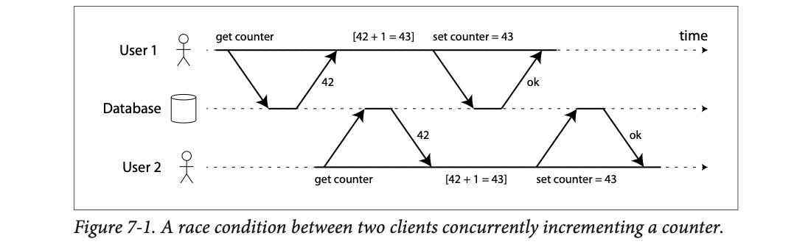
Time flows left to right. The middle line is the database; arrows going down are requests, arrows going up are replies. User 1 asks for the counter and gets 42. Before User 1 writes back, User 2 also asks and also gets 42. Both compute 42 + 1 = 43 in their own code, and both send "set counter = 43". The database says "ok" to both. One increment has vanished.
Isolation in ACID means concurrent transactions are isolated from each other. Classic textbooks formalise this as serializability: each transaction can pretend it is the only one running on the whole database. The database ensures that the committed result is the same as if they had run serially (one after another), even if they actually ran at the same time.
In practice, serializable isolation is rarely used because it costs performance. Some popular databases, such as Oracle 11g, don't even implement it. Oracle has a level called "serializable", but it actually implements snapshot isolation, which is weaker. (Plates 12–31 cover these weaker levels.)
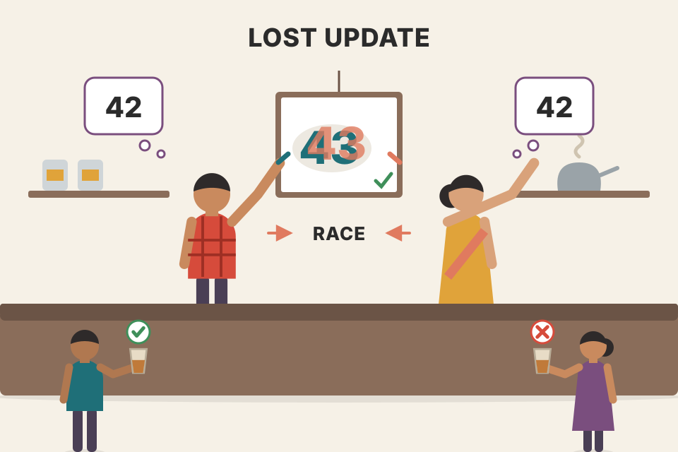
Two cashiers at a chai stall share one "cups sold" whiteboard. Both glance at "42", both sell a cup, both wipe and write "43". Two cups sold, one counted. Where it breaks: people would notice each other at a whiteboard; database clients are blind to each other unless the database makes them wait or checks.
The bug lives in the gap between the read and the write. Each client's "+1" is computed from a value that is already stale when it writes. Serializability closes the gap by guaranteeing the result equals some one-at-a-time order: 42→43→44.
With 10 clients each doing one read-modify-write increment at the same instant, the counter could end anywhere from 43 to 52. With serializable isolation or an atomic increment, it always ends at 52.
A database's whole purpose is to be a safe place to store data without fear of losing it. Durability is the promise that once a transaction commits successfully, its data won't be forgotten, even if there's a hardware fault or the database crashes.
Perfect durability does not exist (Chapter 1, "Reliability"): if all your disks and all your backups are destroyed at the same time, nothing can save you.
Historically durability meant writing to an archive tape, then to disk or SSD, and more recently it has come to mean replication. Which is better? Nothing is perfect:
fsync isn't guaranteed to work. Disk firmware has bugs too.So no single technique gives absolute guarantees. There are only risk-reduction techniques (writing to disk, replicating to remote machines, backups) and they can and should be used together. Take any theoretical "guarantee" with a healthy grain of salt.
Your Aadhaar card: you keep the original in a drawer (disk), a photo on your phone and in DigiLocker (replicas), and a photocopy at your parents' house (backup). A house fire takes the drawer; a lost phone takes the photo; together you're very safe, never 100%. Where it breaks: a photocopy can't silently "rot"; disk data can.
"Commit OK" is a promise made only after the bytes are on stable storage (fsync) and/or acknowledged by enough replicas. That wait is why durable commits are slower than fire-and-forget writes.
To recap, in ACID, atomicity and isolation say what the database should do when a client makes several writes in one transaction:
These assume you modify several objects (rows, documents, records) at once. Such multi-object transactions are needed when several pieces of data must be kept in sync.
Example (email app): to show the number of unread messages you could run
SELECT COUNT(*) FROM emails WHERE recipient_id = 2 AND unread_flag = true
If that's too slow with many emails, you store the unread count in a separate field. That is denormalization. Now every new message must also increment the counter, and every message marked read must decrement it.
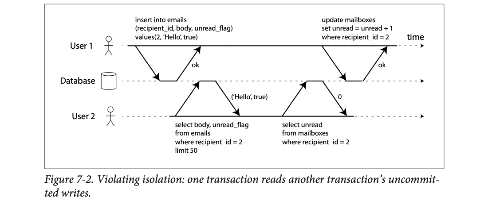
User 1 runs two statements: insert the email "Hello" (unread), then unread = unread + 1. Between the two, User 2 lists emails and sees ('Hello', true), then reads the counter and sees 0. The mailbox shows an unread email while the badge says zero. Isolation would have made User 2 see both changes or neither.
Footnote ii: a wrong unread counter is arguably not critical. Swap it for a customer account balance and a payment transaction, and it matters a lot.
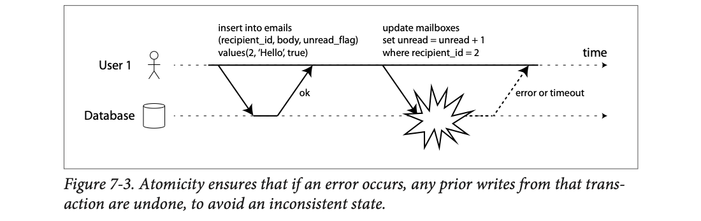
The insert succeeds ("ok"). The second statement, the counter update, blows up (the explosion) and User 1 gets "error or timeout". Without atomicity the email stays and the counter is wrong forever. With an atomic transaction the database aborts and rolls back the inserted email too.
How does the database know which statements belong together? In relational databases it's usually the client's TCP connection: on one connection, everything between BEGIN TRANSACTION and COMMIT is one transaction.
Footnote iii: this isn't ideal. If the TCP connection breaks, the transaction must be aborted. If it breaks after the client asked to commit but before the server confirms, the client doesn't know whether it committed. A transaction manager can fix this by grouping operations by a unique transaction ID not tied to a TCP connection.
Many non-relational databases have no such grouping. Even a multi-object API (like a key-value multi-put that updates several keys) doesn't necessarily mean transaction semantics: it may succeed for some keys and fail for others, leaving a partially updated database.
A WhatsApp chat list where the green unread badge says "0" but the chat shows a bold new message. That mismatch is exactly Figure 7-2. Where it breaks: WhatsApp syncs across phones (a distributed problem); here it's one database with two rows.
The counter is a copy of information that already exists (the count of unread rows). Any copy can drift from its source. A transaction ties the source change and the copy change together so they appear (or vanish) as one.
Atomicity and isolation matter even when you change just one object. Imagine writing a 20 kB JSON document:
Those would be incredibly confusing, so storage engines almost universally provide atomicity and isolation for a single object (such as one key-value pair) on one node:
Some databases also offer richer single-object operations:
These are useful to prevent lost updates (plate 21). But they are not transactions in the usual sense. Some vendors have called compare-and-set and similar operations "lightweight transactions" or even "ACID" for marketing; the book calls that terminology misleading. A transaction usually means grouping multiple operations on multiple objects into one unit.
Footnote iv: strictly, "atomic increment" uses "atomic" in the multithreading sense. In ACID terms it should be called an isolated or serializable increment. "But that's getting nitpicky."
Replacing a page in a bound register: you write the new page fully on a fresh sheet and swap it in in one go, while anyone reading waits a moment. Nobody ever sees a page with the top half old and the bottom half new. Where it breaks: that only protects one page; keeping two registers in sync needs a bigger promise.
Crash recovery replays or discards log records so each object ends in a whole state. The lock means only one thread mutates the object at a time. CAS is a tiny "check and write" done inside that lock.
You save a 20 kB profile JSON. The network drops after 10 kB arrive.
| What the storage engine does | Result a reader sees |
|---|---|
| Writes incoming bytes to its log, but no "commit" record yet | old 20 kB version, whole and valid |
| Connection dies at 10 kB | still the old version |
| On recovery, log entry without a commit marker is thrown away | still the old version, never half-JSON |
| A later full 20 kB write completes and is marked done | the new version, whole |
The per-object lock does the same job for a reader in the middle: it waits, or sees the old copy, never a mix.
Many distributed datastores dropped multi-object transactions because they're hard to do across partitions and get in the way when very high availability or performance is needed. But nothing fundamentally prevents transactions in a distributed database (Chapter 9 covers implementations).
Could every app manage with only a key-value model and single-object operations? Some use cases can. But often writes to several objects must be coordinated:
You can build these apps without transactions, but error handling gets much more complicated without atomicity, and missing isolation causes concurrency problems (plates 12 onwards).
A school register and the class photo list: when a new student joins, both must be updated. If the office only updates one, the teacher calls a name that isn't on the photo list. Where it breaks: a school can fix it next week; a database query reads the mismatch instantly and acts on it.
Anything that is derived from or points to something else is a second object. The moment you have two objects that must agree, you need either a multi-object transaction or careful app-level repair logic.
A key feature of a transaction is that on a problem it can be aborted and retried. ACID databases follow this philosophy: if the database might break its guarantee of atomicity, isolation or durability, it would rather abandon the transaction entirely than let it continue.
Not every system thinks this way. Datastores with leaderless replication (Chapter 5) work on a "best effort" basis: "the database will do as much as it can, and if it runs into an error, it won't undo something it has already done". Recovering from errors becomes the application's job.
Many developers only think about the happy path. For example, popular ORM (object-relational mapping) frameworks such as Rails' ActiveRecord and Django don't retry aborted transactions. The error usually bubbles up as an exception, user input is thrown away and the user sees an error. That's a shame, because the whole point of aborts is to enable safe retries.
Retrying is simple and effective, but not perfect:
Paying at a shop by UPI and the app spins, then says "failed". Do you pay again? If the money actually went, you've paid twice; that's the "succeeded but ack lost" trap. Shops ask "check if it reached" (deduplication by transaction ID) before you retry. Where it breaks: a database can make most retries safe automatically; external side effects like an SMS can't be un-sent.
Abort gives you a clean slate inside the database. It says nothing about the outside world or about whether the client heard the answer. That's why idempotency keys (a unique ID per logical request) are the standard companion to retries.
Newer ORMs and drivers often have retry helpers (for example, transaction retry loops for serialization failures). The book's point stands: check that your stack retries only transient errors, with backoff and a cap.
An order service calls the database and gets an error. What should it do?
| Error | Retry? | Why |
|---|---|---|
| Deadlock detected | yes, right away | transient; the other transaction will finish |
| Serialization failure (isolation violation) | yes | transient; a fresh attempt will see new data |
| Network blip / failover | yes, but with an idempotency key | the commit may already have happened |
| Too many connections / overload | yes, slowly: wait 100 ms, 200 ms, 400 ms, then give up | fast retries make overload worse |
| Unique constraint violated | no | permanent; retrying gives the same error |
| Email already sent inside the transaction | do not re-send | side effects outside the database are not rolled back |
Idempotency key in practice: the client sends order_ref = 7f3a… with each attempt; the table has a unique constraint on it, so a duplicate retry is rejected instead of charging twice.
Numbers here are modelled to make the idea concrete, not from the book.
If two transactions don't touch the same data, they can safely run in parallel. Race conditions only appear when one transaction reads data another is changing, or when two transactions change the same data at the same time.
Concurrency bugs are hard to find by testing: they only appear when you're unlucky with timing, which may be rare and hard to reproduce. They're also hard to reason about, especially in a big app where you don't know what other code touches the database. With many concurrent users, any piece of data could change at any moment.
So databases have long tried to hide concurrency from developers with transaction isolation. In theory, serializable isolation lets you pretend there's no concurrency: transactions have the same effect as if they ran one at a time.
In practice, serializable isolation costs performance and many databases don't want to pay. So it's common to use weaker isolation levels, which protect against some concurrency issues but not all. They are much harder to understand and can cause subtle bugs, but they are used in practice.
These bugs are not theoretical. They have caused substantial loss of money, led to investigations by financial auditors, and corrupted customer data. A popular reaction is "use an ACID database if you're handling financial data!", but that misses the point: even many popular relational ("ACID") databases use weak isolation by default, so they wouldn't necessarily have prevented these bugs.
Instead of trusting tools blindly, we need to understand the kinds of concurrency problems and how to prevent them. The next plates go through the weak (non-serializable) levels informally, with examples; then plate 32 covers serializability. (Rigorous definitions are in the academic literature.)
| Anomaly ↓ / Level → | Read uncommitted | Read committed | Snapshot isolation | Serializable |
|---|---|---|---|---|
| Dirty write | prevented | prevented | prevented | prevented |
| Dirty read | possible | prevented | prevented | prevented |
| Read skew | possible | possible | prevented | prevented |
| Lost update | possible | possible | some DBs detect | prevented |
| Write skew | possible | possible | possible | prevented |
| Phantom (read-write) | possible | possible | possible* | prevented |
This table is assembled from the chapter's text and its summary (pdf p280). * Snapshot isolation stops phantoms in read-only queries, not in read-write write-skew cases.
| Problem | Everyday example | Stopped? |
|---|
Which level stops which problem follows the chapter (plates 13–48). "Read uncommitted" stops dirty writes only.
Traffic rules at a junction. "Serializable" is a single-lane bridge: only one vehicle at a time, totally safe, slow. Weak isolation is a busy roundabout with a few rules: mostly fine, but certain timing still causes a fender-bender. Where it breaks: on a road you see the near-miss; in a database the "crash" is silent bad data.
Each level is a specific bundle of mechanisms (row write locks, kept-old-versions, conflict checks). Each mechanism costs something and blocks a specific race. The cheaper bundles leave specific races open, and you must know which.
The most basic level of isolation is read committed. It makes two guarantees:
Footnote v: some databases support an even weaker level, read uncommitted. It prevents dirty writes but not dirty reads.
A dirty read: one transaction has written data but not yet committed or aborted, and another transaction sees that uncommitted data.
Under read committed, a transaction's writes become visible to others only when it commits, and then all at once. In Figure 7-4, user 1 sets x = 3, but user 2's get x still returns the old value 2 until user 1 commits.
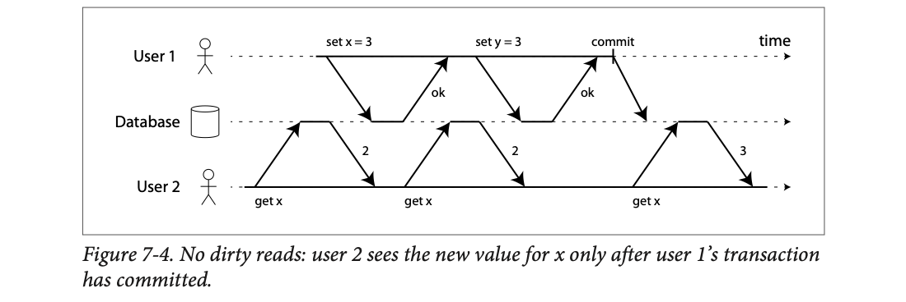
User 1 sends set x = 3 (ok), then set y = 3 (ok), then commit (the tick mark). User 2 reads x three times. The first two reads happen before the commit and both return 2, even though x = 3 has already been written. The third read, after commit, returns 3.
Why prevent dirty reads?
Exam results: the teacher is still marking papers in the staff room (uncommitted). A dirty read is a student peeking at the half-marked sheet and telling everyone "I got 40", before the teacher adds the second page and makes it 75. Read committed means you only see results once they're published on the notice board. Where it breaks: a notice board is updated rarely; a database "publishes" thousands of commits per second.
The database keeps the last committed value next to the in-progress one and hands readers the committed one (details in plate 15). Commit is the single instant when all of a transaction's writes flip to visible.
When two transactions update the same object, we don't know which write comes first, but normally the later write overwrites the earlier one.
What if the earlier write belongs to a transaction that hasn't committed yet, and the later write overwrites that uncommitted value? That's a dirty write. Read committed must prevent dirty writes, usually by delaying the second write until the first write's transaction has committed or aborted.
Preventing dirty writes avoids some problems:
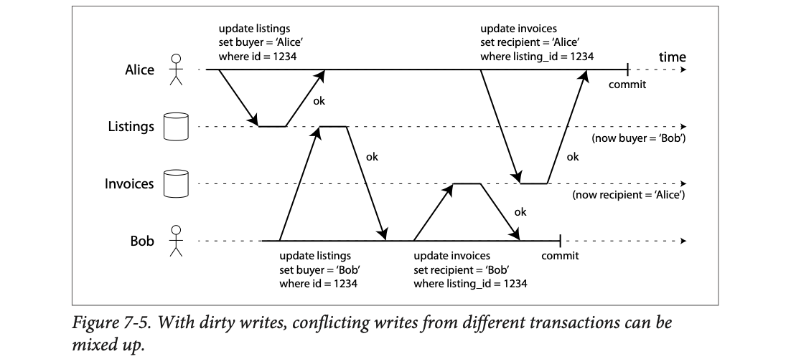
Four lanes: Alice, the Listings table, the Invoices table, Bob. Alice updates the listing first (buyer = Alice). Bob then overwrites it (buyer = Bob) before Alice commits: a dirty write. Bob updates the invoice (recipient = Bob). Then Alice overwrites the invoice (recipient = Alice), another dirty write. Both commit. End state, shown on the right: listing says Bob, invoice says Alice.
Two people filling the same shared Google Form response at a car dealer: one types the buyer's name, the other overwrites it, then they each overwrite a different box. The final form is a Frankenstein of both. A row lock is a "someone else is editing this, wait" banner. Where it breaks: the banner applies per row; it does not stop two people editing different rows that together break a rule (that's write skew, plate 27).
The second writer has to wait for the first writer's lock on that row. So each row's writes from different transactions are lined up in commit order, and two transactions can no longer interleave on the same rows.
Read committed is very popular. It's the default in Oracle 11g, PostgreSQL, SQL Server 2012, MemSQL and many others.
Preventing dirty writes: most databases use row-level locks. To modify an object (row or document), a transaction must first acquire a lock on it and hold it until commit or abort. Only one transaction can hold the lock on an object; another writer must wait. The database does this locking automatically in read committed mode (or stronger).
Preventing dirty reads, option 1 (read locks): make readers briefly acquire the same lock and release it right after reading. A read then can't happen while an object has a dirty value. But this works badly: one long-running write transaction can force many read-only transactions to wait. That hurts response time and operability: a slowdown in one part of the app has a knock-on effect in a completely different part.
Preventing dirty reads, option 2 (what most databases do): as in Figure 7-4, for every object being written the database remembers both the old committed value and the new value set by the transaction holding the write lock. Other transactions reading the object get the old value; only after commit do they switch to the new one.
Footnote vi: at the time of writing, the only mainstream databases using locks for read committed are IBM DB2 and Microsoft SQL Server with read_committed_snapshot=off.
A restaurant menu board being repainted. Instead of covering the board with a sheet ("closed for painting", i.e. read locks), the owner paints the new board in the back while customers keep reading the old one, then swaps them at once. Only one painter may work on it at a time. Where it breaks: the database keeps only one old version here; snapshot isolation (next) keeps many.
Writers still conflict with writers (lock), but readers never touch the lock. They just pick the committed version. That's why read committed is cheap enough to be a default.
At first glance read committed seems to do everything: it allows aborts (needed for atomicity), hides incomplete results, and stops concurrent writes from mixing. Those are useful and much stronger than having no transactions. But there are still plenty of concurrency bugs possible.
Figure 7-6: Alice has $1,000 split across two accounts, $500 each. A transaction moves $100 from account 2 to account 1. If Alice looks at her balances at the wrong moment, she sees account 1 before the incoming payment ($500) and account 2 after the outgoing transfer ($400). Total: $900. $100 seems to have vanished.
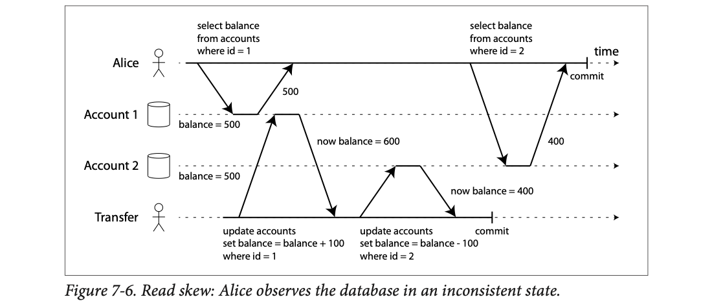
Lanes: Alice, Account 1, Account 2, Transfer. Alice reads account 1 → 500. Then the Transfer transaction adds 100 to account 1 (now 600), subtracts 100 from account 2 (now 400), and commits. Then Alice reads account 2 → 400. Each value she saw was committed when she read it, so read committed is satisfied, but together they're from two different moments.
This is a non-repeatable read or read skew: if Alice read account 1 again at the end, she'd get $600, not $500. Read skew is allowed under read committed, because the balances she saw were indeed committed when she read them.
If Alice reloads a few seconds later, the $100 is back, so it's not lasting. But some situations can't tolerate even temporary inconsistency:
Snapshot isolation is the most common solution. Each transaction reads from a consistent snapshot: all data committed as of one point in time. Even if other transactions change the data later, each transaction sees the old data from the moment it started.
It's a boon for long-running, read-only queries like backups and analytics. A query over data that is changing while it runs is very hard to reason about; a snapshot frozen at a point in time is much easier.
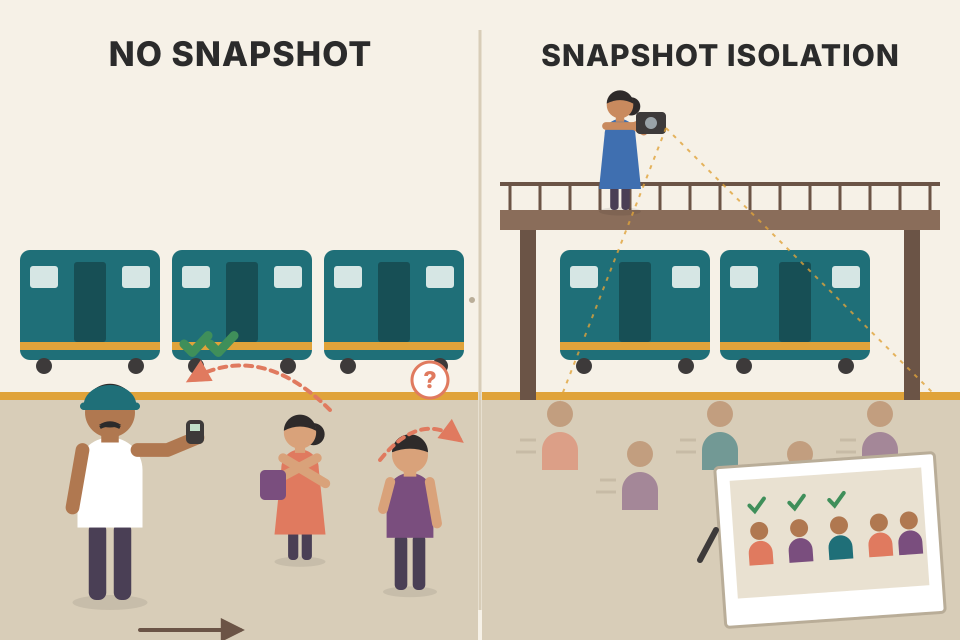
Counting the crowd at a moving train's platform by walking from coach 1 to coach 12. Passengers hop between coaches while you count, so you count some twice and miss others. Snapshot isolation is taking one photo of the whole platform and counting from the photo. Where it breaks: a photo is free; a database snapshot needs old row versions kept around until you're done, which costs space and cleanup.
Read committed decides visibility per read ("what's committed right now?"). Snapshot isolation decides it once per transaction ("what was committed when I started?"). Same rows, different clock.
Backup of 2 tables taking 2 hours (modelled): table A copied at 10:00, table B at 11:30. A transfer at 11:00 moves ₹5,000 from B to A. Without a snapshot, the backup has A before (₹0 added) and B after (₹5,000 removed): ₹5,000 lost forever on restore. With a 10:00 snapshot, both tables are as of 10:00 and the totals match.
Snapshot isolation is supported by PostgreSQL, MySQL with InnoDB, Oracle, SQL Server and more.
Like read committed, it usually uses write locks to prevent dirty writes, so a writer can block another writer of the same object. But reads need no locks. A key principle: readers never block writers, and writers never block readers. So long read queries on a snapshot can run alongside normal writes with no lock contention.
It generalises the trick from Figure 7-4. For dirty reads, the database kept at most two versions (committed + uncommitted). For snapshot isolation it may need several committed versions, because different in-progress transactions need to see the database at different points in time. Hence the name multi-version concurrency control (MVCC).
How PostgreSQL does it (others are similar), Figure 7-7:
txid) when it starts.Footnote vii: transaction IDs are 32-bit integers, so they overflow after about 4 billion transactions. PostgreSQL's vacuum process does cleanup so overflow doesn't affect the data.
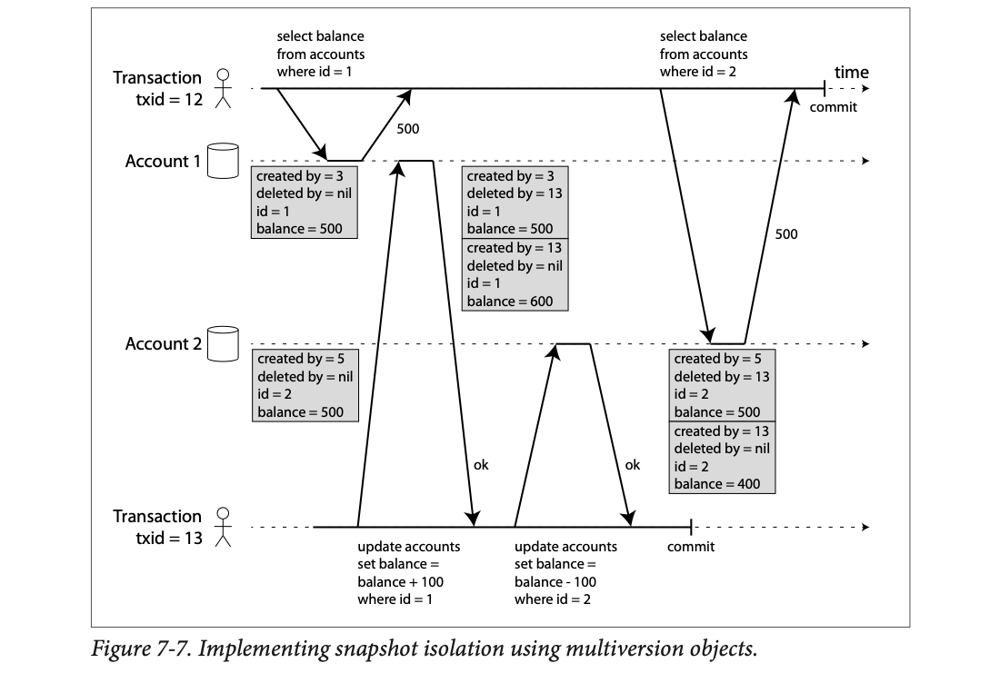
It's Figure 7-6 again, with row versions drawn as grey boxes. Txn 12 (Alice's reads) reads account 1 → 500. Txn 13 (the transfer) adds 100 to account 1: the old row gets deleted by = 13 and a new row created by = 13, balance 600 appears. Same for account 2 (500 → 400). Txn 13 commits. Later txn 12 reads account 2. It still gets 500: the deletion and the new row are both by txn 13, which txn 12 must ignore (plate 18). So txn 12 sees $500 + $500 = $1,000. No vanished money.
txids 3, 5, 12 and 13 come from Figure 7-7. The vacuum step is the cleanup the plate describes; its timing is modelled.
A school's attendance register written in pen: you never erase. To correct a name you strike it through with "struck by teacher #13" and write the new line "written by teacher #13". Anyone who opened the register before teacher 13 arrived reads past teacher 13's marks. Once nobody needs old lines, a clerk recopies the register cleanly (vacuum). Where it breaks: a paper register runs out of pages; databases garbage-collect old versions.
Because no version is overwritten, a reader never has to wait: whatever version it needs still exists. The cost is extra storage for old versions and a background job (PostgreSQL vacuum) to remove versions no live transaction can see.
Account 7 starts at ₹500 (created by txid 3). Three transactions each change it. Nothing is overwritten in place:
| Version | created by | deleted by | balance |
|---|---|---|---|
| v1 | 3 | 20 | ₹500 |
| v2 | 20 | 25 | ₹650 |
| v3 | 25 | 31 | ₹600 |
| v4 | 31 | — | ₹900 |
A long report started as txid 22 (after 20 committed, before 25 started) keeps reading v2 = ₹650 the whole time. Once no running transaction is older than 31, garbage collection (in PostgreSQL, vacuum) deletes v1 to v3.
Numbers here are modelled to make the idea concrete, not from the book.
When a transaction reads, transaction IDs decide what is visible. With carefully defined visibility rules the database presents a consistent snapshot:
The rules apply to both creation and deletion. In Figure 7-7, when txn 12 reads account 2 it sees $500: the deletion of the $500 row was by txn 13 (rule 3: 12 can't see 13's deletion), and the $400 row's creation is invisible by the same rule.
Put another way, an object is visible if both:
A long-running transaction may keep using its snapshot for a long time, reading values others consider long overwritten or deleted. By never updating in place and instead creating a new version on every change, the database gives a consistent snapshot with only a small overhead.
Choose who is reading, and which transactions were still running or had aborted when the reader started. Green rows are what that reader sees.
| account | balance | created_by | deleted_by | visible? |
|---|
Watching a cricket match on a slightly delayed stream that you started at 3:00 pm. Your screen shows the scoreboard "as of when you joined", and anything that was still being decided at 3:00 (a pending DRS review) or happened later isn't on your screen yet. Where it breaks: a stream eventually catches up; a snapshot transaction stays frozen at its start until it ends.
The reader's view is fully described by two things fixed at its start: its own txid and the set of txids still running then. Every version carries created_by/deleted_by, so visibility is a cheap check per row, with no locks.
Reader txid 12 starts while 13 is running. Rows for account 2: (500, created 5, deleted 13) and (400, created 13). Row 1: created by 5 (committed, older) ✓; deleted by 13 → 13 was in progress / later → deletion ignored → visible. Row 2: created by 13 → ignored → invisible. Reader sees 500. A reader with txid 14 that started after 13 committed sees 400.
How do indexes work in a multi-version database?
With append-only B-trees, every write transaction (or batch) creates a new root, and each root is a consistent snapshot of the database at the moment it was created. No txid filtering is needed, because later writes can't modify an existing tree, only create new roots. This approach still needs a background process for compaction and garbage collection.
Google Docs version history: each saved version is a whole document you can open, but behind the scenes unchanged paragraphs are shared, not duplicated. Opening "version 12" is reading from root 12. Where it breaks: Docs keeps history forever; a database deletes roots nobody is reading anymore.
Changing one leaf means rewriting only the path from that leaf to the root: about log(N) pages. Every other page is shared between old and new roots. A reader holding an old root pointer automatically sees a frozen snapshot.
Snapshot isolation is useful, especially for read-only transactions. But databases call it by different names:
| Database | Name it uses | What it actually is |
|---|---|---|
| Oracle | serializable | snapshot isolation |
| PostgreSQL | repeatable read | snapshot isolation |
| MySQL (InnoDB) | repeatable read | snapshot-style (but no lost-update detection, plate 24) |
| IBM DB2 | repeatable read | serializability |
Why the confusion? The SQL standard has no concept of snapshot isolation. The standard is based on System R's 1975 definitions of isolation levels, and snapshot isolation hadn't been invented yet. The standard defines repeatable read, which looks superficially similar. PostgreSQL and MySQL call their snapshot isolation "repeatable read" because it meets the standard's requirements, so they can claim compliance.
Unfortunately the SQL standard's definition of isolation levels is flawed: ambiguous, imprecise and not as implementation-independent as a standard should be. Several databases implement repeatable read with big differences in what they actually guarantee. There is a formal definition in research literature, but most implementations don't satisfy it. And IBM DB2 uses "repeatable read" to mean serializability.
"As a result, nobody really knows what repeatable read means."
"Medium spicy" at three different restaurants: same words, wildly different heat. You have to taste it (test your database) to know. Where it breaks: you notice spice immediately; you notice the wrong isolation level only when a rare race corrupts data.
The 1975 standard defined levels by which anomalies they forbid, using lock-based thinking. MVCC came later and doesn't map cleanly onto those definitions, so vendors picked the nearest label.
Ask four databases for "repeatable read" or "serializable" and you get different things (as the book reports, at the time of writing):
| You ask for… | In this database | What you actually get |
|---|---|---|
| repeatable read | PostgreSQL | snapshot isolation (with lost-update detection) |
| repeatable read | MySQL / InnoDB | snapshot isolation without lost-update detection |
| serializable | Oracle | snapshot isolation (not true serializability) |
| repeatable read | IBM DB2 | serializability (via 2PL) |
Lesson: read your database's docs for what the level does, not what it is called.
So far, read committed and snapshot isolation were mostly about what a read-only transaction sees while others write. The only write-write conflict covered so far is the dirty write. There are other kinds of conflict between concurrent writers. The best known is the lost update problem, shown back in Figure 7-1.
It happens when an app reads a value, modifies it, and writes it back: a read-modify-write cycle. If two transactions do this concurrently, one modification can be lost, because the second write doesn't include the first change. We say the later write clobbers the earlier one. Common scenarios:
Because it's so common, several solutions exist (plates 22–26).
Two family members editing the same shopping list on paper copies: Mom adds "atta", Dad adds "milk", each photographs their copy and sends it to the kirana shop. The shop keeps the last photo it received, so one item is lost. Where it breaks: a person might merge two lists by common sense; a database just keeps the last write unless told otherwise.
The danger is the gap between read and write, during which the value lives only in application memory. Every fix either closes the gap (atomic op, lock), or detects that the gap was violated and makes you redo it (auto-detect, CAS).
The page says "Chai: tea with milk." Priya fixes a typo, Arjun adds a line. Both clients send the whole page back.
| Time | Priya | Arjun | Page in database |
|---|---|---|---|
| 10:00 | opens page | Chai: tea with milk. | |
| 10:01 | opens page | Chai: tea with milk. | |
| 10:03 | saves "Chai: tea with milk and spices." | …milk and spices. | |
| 10:04 | saves "Chai: tea with milk. Served hot." | Chai: tea with milk. Served hot. |
Priya's "and spices" is silently gone: Arjun's write clobbered it because his copy was read before her change.
Numbers here are modelled to make the idea concrete, not from the book.
Many databases have atomic update operations, so you don't implement read-modify-write in app code. When your logic fits them, they're usually the best solution. This is safe in most relational databases:
UPDATE counters SET value = value + 1 WHERE key = 'foo';
Similarly, document databases like MongoDB have atomic operations for local changes to part of a JSON document, and Redis has atomic operations on data structures like priority queues. Not every write fits, for example a wiki page edit involves arbitrary text editing, but where atomic operations work they're usually the best choice.
Footnote viii: it is possible, though fairly complicated, to express text editing as a stream of atomic mutations (see "Automatic conflict resolution" in Chapter 5).
How they're implemented:
Unfortunately, ORM frameworks make it easy to accidentally write unsafe read-modify-write code instead of using the database's atomic operations. Fine if you know what you're doing, but a source of subtle bugs that are hard to find by testing.
counter = Counter.get(key='foo') # read 42 counter.value = counter.value + 1 # in app memory counter.save() # write 43
UPDATE counters SET value = value + 1 WHERE key = 'foo';
The left snippet is a generic illustration of the pattern the book warns about, not code from the book.
Instead of asking the bank "what's my balance?", doing the maths yourself and saying "set it to ₹X", you say "add ₹500". The bank does the read and the write together, behind the counter. Where it breaks: "add ₹500" is easy to say; "edit paragraph 3 of the wiki page sensibly" isn't a single operation.
The read and the write happen inside the database under one lock (or one thread), so no other transaction can sneak in between them. The gap from plate 21 shrinks to zero.
Django has F('value') + 1 and Rails has increment_counter / update_counters, which turn into atomic SQL. Using them avoids the unsafe pattern.
If the database's atomic operations can't express your logic, the app can explicitly lock the objects it will update. Then it does its read-modify-write; any other transaction trying to read the same object concurrently has to wait until the first cycle finishes.
Example: a multiplayer game where several players can move the same figure. An atomic operation may not suffice, because the app must also check the move obeys the game's rules, logic you can't sensibly write as a database query. So you lock the piece:
BEGIN TRANSACTION; SELECT * FROM figures WHERE name = 'robot' AND game_id = 222 FOR UPDATE; -- Check whether move is valid, then update the position -- of the piece that was returned by the previous SELECT. UPDATE figures SET position = 'c4' WHERE id = 1234; COMMIT;
Example 7-1 (book, pdf p257): Explicitly locking rows to prevent lost updates.
The FOR UPDATE clause tells the database to lock all rows returned by the query.
It works, but you must think carefully about your app logic. It's easy to forget a lock somewhere and introduce a race condition.
Values here are modelled to make the idea concrete, not from the book.
A carrom board where a player puts a hand on the striker ("my turn, hands off") while they think about the shot, check the rules, and then play. Nobody else can touch the striker until the hand is lifted. Where it breaks: in code, nobody reminds you to put your hand down first; forget the FOR UPDATE and the race is back.
FOR UPDATE takes the same exclusive row lock a write would take, but at read time. Any other FOR UPDATE or write on those rows waits until you commit or abort.
Both players try to move robot #1234 in game 222.
| Step | Player A | Player B |
|---|---|---|
| 1 | SELECT … FOR UPDATE: gets the lock, sees robot at b2 | |
| 2 | checks the move b2→c4 is legal | SELECT … FOR UPDATE: waits |
| 3 | UPDATE position = c4; COMMIT (lock released) | still waiting |
| 4 | gets the lock, sees robot at c4 (fresh), checks its own move against that |
Without FOR UPDATE, B would have read b2 too, and one of the moves would be lost.
Numbers here are modelled to make the idea concrete, not from the book.
Atomic operations and locks prevent lost updates by forcing read-modify-write cycles to happen one after another. The alternative: let them run in parallel, and if the transaction manager detects a lost update, abort the transaction and make it retry.
Databases can do this check efficiently together with snapshot isolation:
| Level | Detects lost updates? |
|---|---|
| PostgreSQL repeatable read | yes, aborts the offender |
| Oracle serializable | yes |
| SQL Server snapshot isolation | yes |
| MySQL/InnoDB repeatable read | no |
Some authors argue a database must prevent lost updates to qualify as snapshot isolation, so by that definition MySQL does not provide snapshot isolation.
Lost update detection is a great feature because it needs no special code in your app. You might forget a lock or an atomic op; detection happens automatically and so is less error-prone.
Values here are modelled to make the idea concrete, not from the book.
A bank cheque clearing desk that notices "this cheque was written against a balance that has since changed" and bounces it back for you to re-issue, instead of making you queue up in the first place. Where it breaks: a bounced cheque is annoying; an aborted transaction just needs a retry loop in your code.
Under MVCC the database knows which version you read. When you try to write an object whose latest committed version is newer than the one in your snapshot (someone else committed a write to it after you started), it refuses: "could not serialize access due to concurrent update" in PostgreSQL's wording (beyond the book).
Balance is ₹500. T1 adds ₹100, T2 takes away ₹50, both at repeatable read.
| Step | T1 | T2 |
|---|---|---|
| 1 | reads ₹500 | reads ₹500 |
| 2 | writes ₹600, COMMIT | |
| 3 | tries to write ₹450 → error: concurrent update, aborted | |
| 4 | retries: reads ₹600, writes ₹550, COMMIT |
Final ₹550 = 500 + 100 − 50. Correct. On MySQL/InnoDB repeatable read, step 3 would succeed and the balance would end at ₹450 (lost ₹100).
Numbers here are modelled to make the idea concrete, not from the book.
Databases without transactions sometimes have an atomic compare-and-set operation (mentioned in plate 9). It avoids lost updates by letting an update happen only if the value hasn't changed since you read it. If the current value doesn't match what you read, the update does nothing and you must retry the read-modify-write cycle.
Example: to stop two users updating the same wiki page concurrently, you might try:
-- This may or may not be safe, depending on the database implementation UPDATE wiki_pages SET content = 'new content' WHERE id = 1234 AND content = 'old content';
If the content has changed and no longer matches 'old content', nothing happens, so you must check whether the update took effect and retry if needed. But: if the database lets the WHERE clause read from an old snapshot, this may not prevent lost updates, because the condition may be true even while another concurrent write is happening. Check that your database's compare-and-set is safe before relying on it.
Values here are modelled to make the idea concrete, not from the book.
Swapping a seat in a cinema app: "move me from F7 to F8 only if F8 is still empty". If someone grabbed F8 a second ago, nothing happens and the app asks you to pick again. Where it breaks: if the app checks a stale seat map (an old snapshot), it may think F8 is empty when it isn't.
CAS turns "my assumption" into part of the write. The check and the write must be done together, against the latest value. If the check reads an old snapshot, the protection is gone.
A common app-level form of this is a version column: UPDATE … SET …, version = version + 1 WHERE id = ? AND version = ?, then check the affected row count. Many ORMs call this "optimistic locking".
Product 42 has stock = 10 and version = 7. Two staff each sell some units.
| Step | Staff A (sells 3) | Staff B (sells 2) | Row |
|---|---|---|---|
| 1 | reads stock 10, v7 | reads stock 10, v7 | 10, v7 |
| 2 | UPDATE … SET stock=7, version=8 WHERE version=7 → 1 row | 7, v8 | |
| 3 | UPDATE … SET stock=8, version=8 WHERE version=7 → 0 rows | 7, v8 | |
| 4 | re-reads 7, v8; UPDATE stock=5, version=9 WHERE version=8 → 1 row | 5, v9 |
"0 rows updated" is the signal to retry. The check must hit the latest row, not an old snapshot, or the protection is gone.
Numbers here are modelled to make the idea concrete, not from the book.
In replicated databases (Chapter 5), preventing lost updates takes on another dimension: copies live on several nodes and can be modified concurrently on different nodes, so extra steps are needed.
Two branches of a shop each count footfall on their own clicker. At night, adding both clicker totals gives the right number (commutative). But if each branch instead phones HQ saying "total is now 11" and HQ keeps whichever call came last, one branch's visitor is lost (LWW). Where it breaks: not every update is as easy to merge as "+1".
With no single copy to lock, the system must accept both writes and merge later. That only works without loss if the operations can be combined in any order, or if the app gets to see all siblings.
A post has 100 likes. Replica Mumbai and replica Chennai each get one like at the same moment.
| Strategy | Mumbai | Chennai | After syncing |
|---|---|---|---|
| Last write wins, storing the value | sets 101 | sets 101 | 101 (one like lost) |
| Commutative "increment" operation (like Riak 2.0 counters) | +1 | +1 | 102 (both kept) |
| Siblings, app merges | 101 (from 100) | 101 (from 100) | app sees two versions and must merge them |
Increments can be applied in any order on any replica and still add up, which is why they survive replication.
Numbers here are modelled to make the idea concrete, not from the book.
Dirty writes and lost updates are races where transactions write the same objects. Those must be prevented, automatically by the database or with manual safeguards (locks, atomic ops). But there are more subtle races.
Example: an app for doctors to manage on-call shifts at a hospital. The hospital tries to have several doctors on call, but must have at least one. A doctor can give up a shift (say they're sick) as long as at least one colleague stays on call.
Alice and Bob are the two doctors on call for a shift. Both feel unwell and click "go off call" at about the same time:
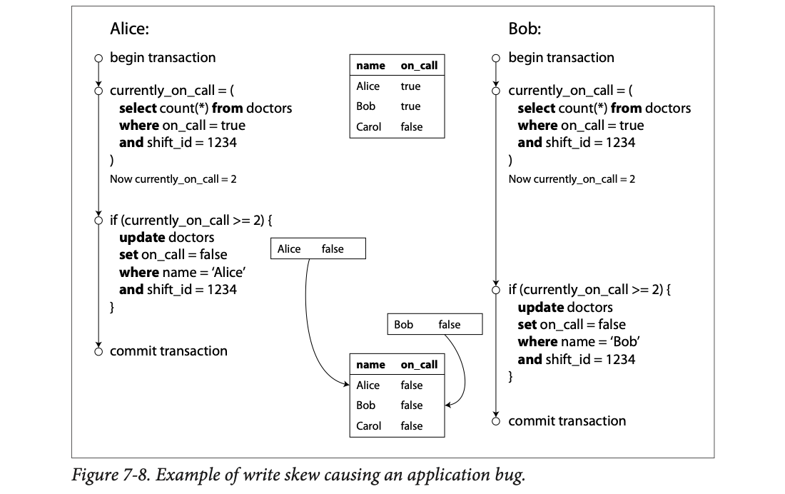
Left column is Alice's transaction, right column is Bob's, time flows down. The small table at the top is the starting state (Alice true, Bob true, Carol false). Both run the same select count(*) and both see 2. Alice writes "Alice false", Bob writes "Bob false" (the two small boxes with arrows). They touch different rows, so no lock conflict. The bottom table is the result: everyone false.
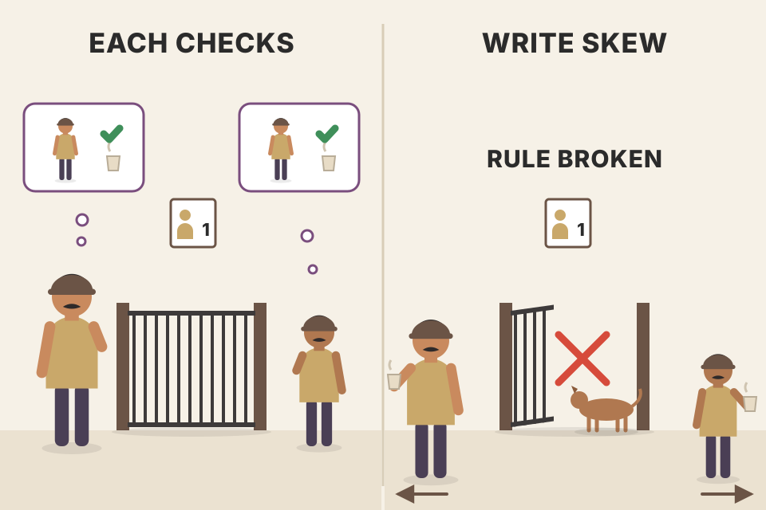
Two security guards at a society gate. Rule: at least one must stay. Each guard glances at the other ("he's here, I can step out for chai") and both leave at the same moment. Gate empty. Neither changed the other's status; each only changed his own. Where it breaks: guards could shout to each other; transactions under snapshot isolation each see a frozen picture where the other is still there.
Each transaction's decision depends on rows it read (both doctors) but it only writes one row. Write locks only protect rows being written, and the two writes are to different rows, so nothing conflicts. The check-then-act pattern is broken by a write the snapshot couldn't see.
This anomaly is called write skew. It's neither a dirty write nor a lost update, because the two transactions update two different objects (Alice's and Bob's records). The conflict is less obvious, but it's definitely a race: run one after the other, the second doctor would have been stopped. It only happened because they ran concurrently.
Think of write skew as a generalisation of lost update: two transactions read the same objects, then each updates some of them (possibly different ones). In the special case where they update the same object, you get a dirty write or lost update (depending on timing).
Our options are more limited than for lost updates:
BEGIN TRANSACTION; SELECT * FROM doctors WHERE on_call = true AND shift_id = 1234 FOR UPDATE; UPDATE doctors SET on_call = false WHERE name = 'Alice' AND shift_id = 1234; COMMIT;
As before, FOR UPDATE locks all rows the query returns, so Bob's identical query must wait until Alice commits, then sees only 1 doctor on call.
A lost update is two people writing on the same line of a register. Write skew is two people each reading the whole page, then writing on different lines, where the page's total rule ("at least ₹1,000 in the cash box") breaks only when both lines are added. Where it breaks: a cashier could re-check the total before closing; snapshot isolation doesn't re-check.
Locks protect what you write; write skew is about what you read. Locking the read set (FOR UPDATE) turns the hidden dependency into a visible lock conflict, which is why it works for the doctors.
Write skew may seem esoteric, but once you know it you see it everywhere:
Rule: no two bookings for the same room at the same time. When someone books, you check for conflicting (overlapping) bookings, and if none, create the meeting:
BEGIN TRANSACTION;
-- Check for any existing bookings that overlap with the period of noon-1pm
SELECT COUNT(*) FROM bookings
WHERE room_id = 123 AND
end_time > '2015-01-01 12:00' AND start_time < '2015-01-01 13:00';
-- ...If the previous query returned zero:
INSERT INTO bookings
(room_id, start_time, end_time, user_id)
VALUES (123, '2015-01-01 12:00', '2015-01-01 13:00', 666);
COMMIT;
Example 7-2 (book, pdf p262): A meeting room booking system tries to avoid double-booking (not safe under snapshot isolation).
Snapshot isolation does not stop another user concurrently inserting a conflicting meeting. To guarantee no scheduling conflicts you again need serializable isolation.
Footnote ix: in PostgreSQL you can do this more elegantly with range types, but they aren't widely supported in other databases.
In Example 7-1 a lock stopped two players moving the same figure. It doesn't stop two different figures moving to the same position, or some other rule-breaking move. Depending on the rule, a unique constraint might work; otherwise you're open to write skew.
Each user has a unique username; two people try to register the same one at once. Checking "is it taken?" and then creating the account in a transaction is not safe under snapshot isolation. Luckily a unique constraint is a simple fix: the second transaction is aborted for violating it.
A service letting users spend money or points must ensure they don't spend more than they have. You might insert a tentative spending item, list all items in the account, and check the sum is positive. With write skew, two spending items get inserted concurrently that together make the balance negative, and neither transaction notices the other.
| Example | Check (SELECT) | Write | Simple fix? |
|---|---|---|---|
| On-call doctors | ≥ 2 doctors on call? | UPDATE own row | FOR UPDATE on the rows read |
| Meeting room | no overlapping booking? | INSERT booking | serializable (or materialise, plate 31) |
| Game | square empty? | UPDATE figure position | maybe a unique constraint |
| Username | name free? | INSERT user | unique constraint ✓ |
| Double-spend | sum stays positive? | INSERT spending item | serializable |
Values here are modelled to make the idea concrete, not from the book.
Booking the society clubhouse through a WhatsApp group: two residents both scroll up, see "Saturday free", both post "booked Saturday". The check and the claim are separate steps, and neither saw the other's message in time. Where it breaks: people sort it out by talking; the database has no idea there's a clash unless isolation is serializable or a constraint exists.
In four of these, the check looks for the absence of something, and the write creates it. There is no existing row the two transactions both touch, which is exactly why ordinary locks can't help (next plate).
A rewards wallet holds ₹100. The rule: the sum of items must stay ≥ 0. Two ₹70 purchases arrive at once.
| Step | Purchase 1 | Purchase 2 |
|---|---|---|
| 1 | inserts −70 | inserts −70 |
| 2 | sums its snapshot: 100 − 70 = 30 ≥ 0 ✓ | sums its snapshot: 100 − 70 = 30 ≥ 0 ✓ |
| 3 | COMMIT | COMMIT |
| Real balance | 100 − 70 − 70 = −40 |
Each snapshot only contains its own insert, so neither sees the other. The rule "≥ 0" is broken even though each transaction checked it.
Numbers here are modelled to make the idea concrete, not from the book.
All these examples follow a similar pattern (steps may come in a different order):
SELECT checks whether some requirement holds by searching for rows matching a search condition (≥ 2 doctors on call; no booking for that room/time; no figure on that square; username not taken; money still in the account).In the doctors case, the row changed in step 3 was one of the rows returned in step 1, so locking them (SELECT FOR UPDATE) works. The other four are different: they check for the absence of matching rows, and the write adds a matching row. If step 1 returns no rows, SELECT FOR UPDATE has nothing to attach locks to.
This effect, where a write in one transaction changes the result of a search query in another transaction, is called a phantom. Snapshot isolation avoids phantoms in read-only queries, but in read-write transactions like these, phantoms can cause particularly tricky write skew.
Putting a "reserved" cloth on a chair works if the chair exists. A phantom is a chair that doesn't exist yet: you check the corner, it's empty, so you go to fetch a chair; meanwhile someone else also saw the empty corner and brings theirs. You can't put a cloth on empty air. Where it breaks: plate 31 shows you can pre-place "virtual chairs" to put cloths on.
Row locks attach to rows that exist. A search condition covers rows that might exist in the future. To lock the future you need a lock on the condition (predicate lock, plate 41) or on a stand-in row (plate 31).
If the problem is that there's no object to attach locks to, maybe we can artificially introduce a lock object into the database.
For meeting rooms: create a table of time slots and rooms. Each row is one room for one time period (say 15 minutes). Create rows for all combinations ahead of time, e.g. for the next 6 months.
A booking transaction now locks (SELECT FOR UPDATE) the rows for the desired room and time period. Once it holds the locks, it checks for overlapping bookings and inserts the new booking as before. The extra table isn't used to store booking information: it's purely a collection of locks that stops bookings for the same room and time being changed concurrently.
This is called materializing conflicts: it turns a phantom into a lock conflict on a concrete set of rows. Downsides: it can be hard and error-prone to figure out how to materialize conflicts, and it's ugly to let a concurrency-control mechanism leak into the application data model. So it's a last resort; a serializable isolation level is much preferable in most cases.
Pick a time range for each user, then press "Both book at once". Locked slot rows are amber; if both need the same row, the second waits and then sees the first booking.
A badminton court sign-up sheet printed with every 30-minute slot for the month. You can't "reserve the absence of a booking", but you can write your name in pre-printed boxes, and two people can't write in the same box at once. Where it breaks: you must print boxes for every possible slot in advance, and choose the slot size right; the database ends up storing 6 months of empty rows just for locking.
The phantom ("a booking that might be inserted") becomes a real row ("room 123, 12:15–12:30"). Two overlapping bookings must both lock at least one shared slot row, so normal row locks now serialise them.
Rows needed: 10 rooms × 4 slots/hour × 24 h × 182 days ≈ 174,720 lock rows for 6 months (modelled count from the book's 15-minute / 6-month numbers, with 10 rooms assumed).
We've seen many races. Read committed and snapshot isolation stop some, but not others, especially write skew and phantoms. "It's a sad situation":
This isn't new; it's been like this since the 1970s when weak isolation levels were introduced. All along, researchers' answer has been simple: use serializable isolation!
Serializable isolation is usually regarded as the strongest level. It guarantees that even if transactions run in parallel, the end result is the same as if they ran one at a time, serially. So if each transaction is correct when run alone, it stays correct when run concurrently: the database prevents all possible race conditions.
Then why doesn't everyone use it? We need to look at how it's implemented and how it performs. Most databases offering serializability today use one of three techniques:
For now these are discussed for single-node databases; Chapter 9 generalises them to multiple nodes.
| ① Serial execution | ② Two-phase locking | ③ SSI | |
|---|---|---|---|
| Core idea | one thread, one txn at a time | readers and writers block each other | run freely, check at commit |
| Style | pessimistic to the extreme | pessimistic | optimistic |
| Main cost | limited to one CPU core (per partition) | waiting, deadlocks, unstable latency | aborts and retries under contention |
| Used by (book) | VoltDB/H-Store, Redis, Datomic | MySQL InnoDB & SQL Server serializable, DB2 repeatable read | PostgreSQL ≥ 9.1 serializable, FoundationDB |
Toy numbers (x = 5, T1 adds 10, T2 doubles) are modelled, not from the book.
Three ways to run a single ATM safely: (1) one queue, one person at a time, make each person fast; (2) let several people in, but anyone touching an account others are using must wait; (3) let everyone go ahead and, at the end, cancel any withdrawal that turned out to clash. Where it breaks: ATMs serve humans; database transactions take microseconds, so the trade-offs are about throughput and tail latency.
"Serializable" is a promise about the result, not about how you get there. Each technique gets the same promise with a different bill: lost parallelism, waiting, or wasted work.
x = 5. T1 does x = x + 10. T2 does x = x × 2. They run at the same time.
| Possible ending | How | Allowed under serializable? |
|---|---|---|
| 30 | T1 then T2: (5 + 10) × 2 | yes, a real one-at-a-time order |
| 20 | T2 then T1: 5 × 2 + 10 | yes, a real one-at-a-time order |
| 15 | both read 5; T1 writes 15 last | no, no serial order gives 15 |
| 10 | both read 5; T2 writes 10 last | no, no serial order gives 10 |
Serializable does not promise which order. It promises the result equals some order.
The simplest way to avoid concurrency problems is to remove concurrency: run one transaction at a time, in serial order, on a single thread. This sidesteps detecting and preventing conflicts altogether, and the result is serializable by definition.
It seems obvious, but database designers only decided around 2007 that a single-threaded loop was feasible. Multithreaded concurrency had been considered essential for 30 years. What changed? Two things:
Serial execution is implemented in VoltDB/H-Store, Redis and Datomic. A single-threaded system can sometimes beat a concurrent one, because it avoids the coordination overhead of locking. But its throughput is limited to one CPU core. To make the most of that thread, transactions must be structured differently.
Values here are modelled to make the idea concrete, not from the book.
A busy dosa tawa with one expert cook. No two cooks bumping elbows, no "who's using the ladle", just one order after another, very fast, because everything (batter, chutney) is within arm's reach (in RAM). Where it breaks: if one customer orders something that needs a trip to the storeroom (disk) or keeps changing their mind (slow transaction), the whole queue stalls.
Locks, latches and conflict checks cost CPU and create waits. If every transaction finishes in microseconds from RAM, a single thread with zero coordination can do more useful work than many threads fighting over locks.
Say an in-memory transaction takes 50 µs (microseconds) of CPU. One thread then does 1,000,000 ÷ 50 = 20,000 transactions per second.
| What happens | Effect on the single thread |
|---|---|
| All data in RAM, short transaction | 50 µs each, 20,000/s |
| One transaction needs a 10 ms disk read | everything stops for 10 ms: about 200 others queue behind it |
| One transaction waits on a user to click | the whole database is frozen until they click |
That is why serial execution needs in-memory data and short, non-interactive transactions.
Numbers here are modelled to make the idea concrete, not from the book.
In the early days, the intention was that a transaction could cover an entire flow of user activity. Example: booking an airline ticket is multi-stage (search routes, fares, seats; customer decides on itinerary; book seats on each flight; enter passenger details; pay). Designers thought it would be neat to make that whole process one atomically committed transaction.
But humans are very slow to decide and respond. If a transaction waits for user input, the database must support a huge number of concurrent, mostly idle transactions. Most can't do that efficiently, so almost all OLTP apps keep transactions short by not waiting for a user inside one. On the web, a transaction is committed within the same HTTP request; it doesn't span requests. A new HTTP request starts a new transaction.
Even with the human out of the loop, transactions still run in an interactive client-server style, one statement at a time: the app sends a query, reads the result, maybe sends another depending on the first, and so on, across the network between the app machine and the database machine.
In this interactive style, a lot of time goes on network communication. If the database processed only one transaction at a time, throughput would be dreadful: it would spend most of its time waiting for the app's next query. So such databases must process many transactions concurrently to perform reasonably.
That's why systems with single-threaded serial processing don't allow interactive multi-statement transactions. The app must submit the whole transaction code ahead of time, as a stored procedure. Provided all data it needs is in memory, the stored procedure runs very fast, without waiting for network or disk I/O.
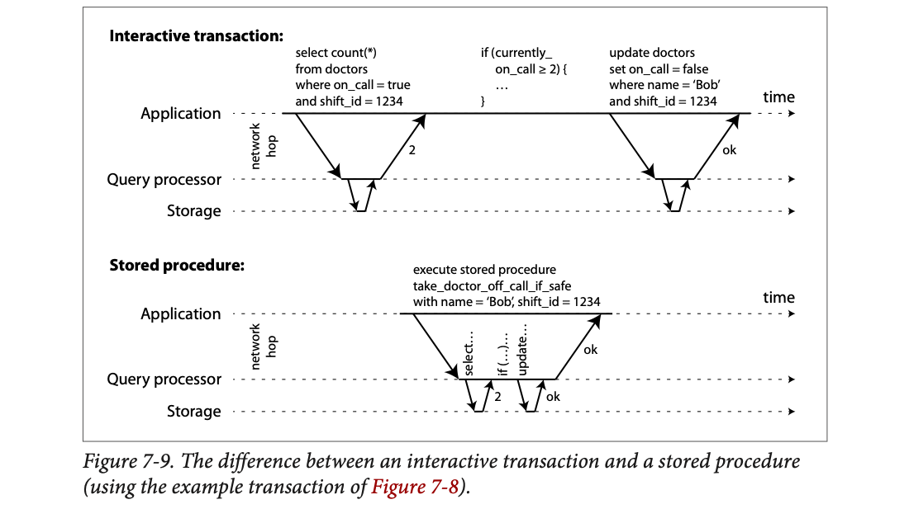
Top: an interactive transaction. The application sends select count(*)… across the network ("network hop") to the query processor, which asks storage; "2" comes back. The app runs its if in its own code, then sends the update, another round trip, gets "ok". Bottom: a stored procedure. The app sends one call, take_doctor_off_call_if_safe(name='Bob', shift_id=1234). The select, the if, and the update all happen inside the database (short hops to storage only), and a single "ok" returns. One network round trip instead of two (or more).
Modelled: interactive time = n × (RTT + work); stored-procedure time = 1 × RTT + n × work, but a single-threaded engine is only busy for n × work. Throughput of one thread = 1 / (time the thread is occupied per transaction). Not from the book.
Ordering at a restaurant: interactive = calling the waiter for each dish ("one dosa"... waiter goes, comes back... "now a coffee"...). Stored procedure = handing over the full written order at once. With only one cook, you'd never let the cook stand at your table between each dish. Where it breaks: a written order can't react to things like "if the dosa is too spicy, then..." unless you wrote the "if" into the order, which is exactly what a stored procedure does.
With serial execution, the one thread is occupied for the whole life of the current transaction. Network round trips inside that life are pure idle time. Stored procedures move the logic next to the data, so the thread's time is all CPU work on RAM.
Stored procedures have existed in relational databases for a while and have been part of the SQL standard (SQL/PSM) since 1999. They have a somewhat bad reputation:
Those issues can be overcome. Modern implementations dropped PL/SQL for general-purpose languages: VoltDB uses Java or Groovy, Datomic uses Java or Clojure, and Redis uses Lua.
With stored procedures and in-memory data, running all transactions on one thread becomes feasible. With no I/O waits and no other concurrency-control overhead, they get quite good throughput on one thread.
VoltDB also uses stored procedures for replication: instead of copying a transaction's writes between nodes, it executes the same stored procedure on each replica. So stored procedures must be deterministic (same result on every node). If a transaction needs the current date and time, it must use special deterministic APIs.
Values here are modelled to make the idea concrete, not from the book.
Two branches of a sweet shop that both follow the same recipe card instead of shipping finished laddoos to each other. Works only if the recipe never says "add sugar to taste" (non-deterministic); it must say "add exactly 200 g". "Today's date" must come from the head office's card, not each branch's wall clock. Where it breaks: recipes can't depend on randomness at all, whereas copied writes can contain any value.
Replicating the command instead of the result is statement-based replication. It's compact, but any non-determinism (clock, random, iteration order) makes replicas silently diverge, hence the strict rules.
VoltDB copies the procedure call to each replica, not the resulting rows. Imagine a procedure that stores "created_at = current time".
| Replica | Runs at | Stores |
|---|---|---|
| Replica 1 | 10:00:00.001 | created_at = 10:00:00.001 |
| Replica 2 | 10:00:00.004 | created_at = 10:00:00.004 (different!) |
| Both, using the special deterministic time API | — | the same timestamp on every replica |
Same input + same code must give the same output on every node, or replicas drift apart. Random numbers have the same problem.
Numbers here are modelled to make the idea concrete, not from the book.
Serial execution makes concurrency control simple but limits throughput to one CPU core on one machine. Read-only transactions can run elsewhere using snapshot isolation, but for apps with high write throughput the single thread can become a serious bottleneck.
To scale to many cores and nodes, you can partition the data (Chapter 6); VoltDB supports this. If each transaction only touches data in one partition, each partition gets its own transaction thread running independently. Give each CPU core its own partition and throughput scales linearly with the number of cores.
Transactions touching multiple partitions need coordination across all partitions they touch. The stored procedure must run in lock-step across them to keep the whole system serializable.
Cross-partition transactions are vastly slower: VoltDB reports about 1,000 cross-partition writes per second, orders of magnitude below its single-partition throughput, and this can't be increased by adding machines.
Whether transactions can be single-partition depends heavily on the data's structure. Simple key-value data partitions easily; data with multiple secondary indexes likely needs lots of cross-partition coordination (Chapter 6).
Modelled: each partition thread does 50,000 single-partition txns/s (made-up number); cross-partition txns are capped at the book's ~1,000/s total. Total throughput is limited by whichever runs out first. Only the 1,000/s figure is from the book.
A big railway station with one ticket window per zone. If everyone's ticket is within one zone, opening 8 windows makes the queue 8× faster. But a ticket spanning three zones needs all three clerks to stop and stamp it together; those travellers crawl, and adding more windows doesn't help them. Where it breaks: real clerks can multitask a bit; a partition thread in lock-step is fully blocked.
Each partition is its own serial world. A cross-partition transaction must make several serial worlds pause at the same point so the global order stays consistent, which is a coordination cost that grows with partitions rather than shrinking.
Serial execution is a viable way to get serializable isolation, within constraints:
Footnote x: if a transaction needs data that isn't in memory, the best solution may be to abort it, fetch the data into memory asynchronously while processing other transactions, then restart it once loaded. This is anti-caching (Chapter 3). It only works if the total data a query needs fits in memory.
| Your workload | Serial execution fits? |
|---|---|
| Short OLTP txns, data in RAM, writes < one core, partitionable by key | yes |
| Some txns take seconds (big reports inside txns) | no: one stalls all |
| Hot data far bigger than RAM | no (anti-caching helps only partly) |
| Most txns span several partitions | no: ~1,000/s cap |
Four conditions come from the book’s summary (pdf p269–270); the stored-procedure one comes from plate 34. The verdict wording is ours.
A single-window "express counter" at a supermarket: great if every customer has ≤ 5 items and pays instantly. One customer with a full trolley, or one who has to go back for a forgotten item (data not in RAM), blocks everyone. Anti-caching is the cashier saying "step aside, fetch it, then come back to the front". Where it breaks: in a store the cashier can serve the next customer while you fetch; that's exactly what anti-caching does.
Serial execution trades parallelism for zero coordination. That is only a good trade if each unit of work is tiny and never blocks on I/O.
For around 30 years there was only one widely used algorithm for serializability: two-phase locking (2PL).
Footnote xi: sometimes called strong strict two-phase locking (SS2PL) to distinguish it from other 2PL variants.
Two-phase locking (2PL) sounds like two-phase commit (2PC), but they are completely different things. 2PC is in Chapter 9.
Locks are already used to prevent dirty writes: if two transactions write the same object, the second waits for the first to finish. 2PL is similar but much stronger. Several transactions may read the same object at once as long as nobody is writing it. But as soon as anyone wants to write (modify or delete), exclusive access is required:
So under 2PL, writers don't just block writers: readers block writers and writers block readers. Snapshot isolation's mantra is the opposite, "readers never block writers, and writers never block readers"; that's the key difference. On the other hand, because 2PL provides serializability, it protects against all the races above, including lost updates and write skew.
| Holder has ↓ / requester wants → | read (shared) | write (exclusive) |
|---|---|---|
| nothing | go | go |
| shared (someone read it) | go (share) | wait |
| exclusive (someone wrote it) | wait | wait |
Values here are modelled to make the idea concrete, not from the book.
A library reference book: many people can read it at the same table (shared). But if someone wants to rewrite a chapter (exclusive), everyone must hand it back first; and while it's being rewritten, nobody can read it. Where it breaks: people hand a book back quickly; a 2PL transaction holds its locks until it commits, however long that takes.
If nobody can read what you're writing or write what you're reading until you finish, then any two conflicting transactions are forced into an order. That ordering is exactly serializability.
2PL is used by the serializable level in MySQL (InnoDB) and SQL Server, and the repeatable read level in DB2.
Every object has a lock, either in shared mode or exclusive mode:
With so many locks, it's easy for A to wait for B's lock while B waits for A's. That's a deadlock. The database automatically detects deadlocks and aborts one transaction so the others proceed. The aborted one must be retried by the app.
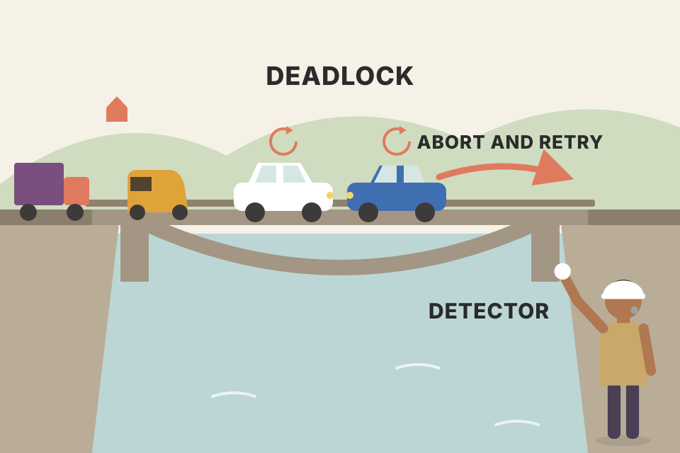
Two cars meet on a narrow one-lane bridge from opposite ends; each waits for the other to reverse. Forever. A traffic cop (deadlock detector) orders one car to back off entirely and try again later. Where it breaks: the backed-off driver loses only a minute; an aborted transaction loses all its work so far and redoes it.
The database keeps a "waits-for" graph (who waits for whom). A cycle in that graph is a deadlock. Breaking the cycle means aborting one member, which releases its locks.
Two transactions both read row x, then both want to update it.
| Step | T1 | T2 | Lock on x |
|---|---|---|---|
| 1 | read x → takes shared lock | S: {T1} | |
| 2 | read x → takes shared lock (sharing is fine) | S: {T1, T2} | |
| 3 | write x → wants exclusive, waits for T2 | S: {T1, T2} | |
| 4 | write x → wants exclusive, waits for T1 | deadlock: each waits for the other | |
| 5 | database aborts T2; its shared lock is released | S: {T1} | |
| 6 | upgrade to exclusive, write, COMMIT | application retries T2 from the start | X: {T1} → free |
This "read then write the same row" pattern is exactly the counter increment from Figure 7-1, and it is one simple way deadlocks arise under 2PL.
The big downside of 2PL, and why not everyone has used it since the 1970s, is performance: throughput and response times are significantly worse than under weak isolation.
Modelled: each normal txn needs 2 ms holding the same lock; they run one after another after the slow one. Not book numbers; it shows why p99 latency explodes under 2PL contention.
A single toll booth where one truck driver is arguing about the fare: every car behind waits, and the 20th car's wait is the argument plus 19 other cars. Average wait looks okay; the unlucky ones wait ages. Where it breaks: cars can sometimes switch lanes; a transaction waiting for a specific row lock cannot.
Locks turn contention into waiting. Waiting adds up along queues, so the tail (p99) latency depends on the slowest transaction in the queue, not the typical one.
We glossed over a subtle detail: phantoms (plate 30), one transaction changing the results of another's search query. A serializable database must prevent phantoms.
For meeting rooms: if one transaction searched for bookings for a room within a time window (Example 7-2), another can't concurrently insert or update a booking for the same room and overlapping time. (It's fine to insert bookings for other rooms, or the same room at a non-overlapping time.)
Conceptually we need a predicate lock. It's like a shared/exclusive lock, but instead of belonging to one object (one row), it belongs to all objects matching a search condition, such as:
SELECT * FROM bookings
WHERE room_id = 123 AND
end_time > '2015-01-01 12:00' AND
start_time < '2015-01-01 13:00';
A predicate lock restricts access like this:
The key idea: a predicate lock applies even to objects that don't yet exist but might be added (phantoms). If 2PL includes predicate locks, the database prevents all forms of write skew and other races, so its isolation becomes serializable.
Transaction A has searched "room 123, 12:00–13:00". Pick what B tries to insert.
| Lock A holds | B's insert | Why |
|---|
Telling the wedding hall manager "hold any booking request for Hall 1 on 12 December evening until I confirm", instead of holding a specific existing booking. Even a request that hasn't been made yet will be paused. Where it breaks: the manager checks each new request against a few holds in his head; a database with thousands of active predicate locks spends a lot of time checking.
Row locks guard existing rows. A predicate lock guards a region of the "space of possible rows". Any write landing inside that region, old or new value, has to wait, which kills phantoms.
Predicate locks don't perform well: with many active locks, checking for matches is slow. So most databases with 2PL actually implement index-range locking (also called next-key locking), a simplified approximation of predicate locking.
It's safe to simplify a predicate by making it match a greater set of objects. A predicate lock on "room 123, noon–1pm" can be approximated by locking room 123 at any time, or all rooms between noon and 1pm. That's safe because any write matching the original predicate also matches the approximation.
The bookings database probably has an index on room_id and/or on start_time/end_time (else the query would be very slow):
Either way, an approximation of the search condition is attached to an index. Another transaction inserting, updating or deleting a booking for the same room and/or overlapping time must update the same part of the index, hits the shared lock, and waits.
This effectively protects against phantoms and write skew. Index-range locks are less precise than predicate locks (they may lock more than strictly needed), but have much lower overhead, so they're a good compromise.
If there's no suitable index, the database can fall back to a shared lock on the entire table. Bad for performance (it stops all other writes to the table) but safe.
The simulator in plate 41 also shows the two index-range approximations and the whole-table fallback; compare which extra inserts they block.
Instead of "hold any Hall 1 booking for 12 December evening" (precise, slow to check), the manager simply puts a sticky note on the whole "Hall 1" page of his register, or on the whole "12 December" page. Faster to check, sometimes blocks a request that didn't really clash. With no register pages at all, he locks the entire register. Where it breaks: the over-blocking is real: unrelated customers wait.
An index already groups rows by the searched column. Any conflicting write must touch that same index region, so a lock on the region is a cheap tripwire. In InnoDB this is the "next-key lock" on index gaps (beyond the book).
Transaction A searched "room 123, noon to 1pm". The database put a shared lock on the room_id = 123 index entry.
| Someone tries to insert… | Blocked? | Why |
|---|---|---|
| room 123, 12:30–13:30 | yes, waits | matches the real condition |
| room 123, 15:00–16:00 | yes, waits | not needed, but room 123 is locked (over-locking, still safe) |
| room 124, 12:00–13:00 | no | different index entry |
| (no usable index) | every insert waits | falls back to a lock on the whole table |
Locking a bit too much costs some waiting; locking too little would break serializability. Index-range locks pick the cheap, safe side.
The picture so far is bleak. Serializable implementations either don't perform well (2PL) or don't scale well (serial execution). Weak levels perform well but allow races (lost updates, write skew, phantoms). Are serializability and good performance fundamentally at odds?
Perhaps not. Serializable snapshot isolation (SSI) is very promising: full serializability with only a small performance penalty compared to snapshot isolation. It's fairly new: first described in 2008, and the subject of Michael Cahill's PhD thesis.
Today SSI is used in single-node databases (the serializable level in PostgreSQL since 9.1) and distributed ones (FoundationDB uses a similar algorithm). Being young compared to other mechanisms, it's still proving itself in practice, but it may be fast enough to become the new default.
An exam hall where students sit wherever they like and write freely (no queue at the door), and at the end the invigilator checks the answer sheets for copying and cancels only the ones that cheated. Where it breaks: cancelled students must retake the exam; in a hall where everyone sits shoulder to shoulder (high contention), lots of retakes happen.
SSI = snapshot isolation (fast, no read locks) + bookkeeping of who read what and who wrote what. At commit, it looks for the specific dangerous pattern that causes write skew and aborts one transaction if found.
Two-phase locking is pessimistic concurrency control: if anything might go wrong (shown by another transaction's lock), wait until it's safe. It's like mutual exclusion in multithreaded programming.
Serial execution is pessimistic to the extreme: like each transaction holding an exclusive lock on the whole database (or partition) for its duration. We compensate by making each transaction very fast, so the "lock" is held only briefly.
SSI is optimistic: instead of blocking when something potentially dangerous happens, transactions continue anyway, hoping it'll be fine. When a transaction wants to commit, the database checks whether anything bad happened (isolation violated); if so, it's aborted and retried. Only transactions that executed serializably may commit.
Optimistic concurrency control is an old idea, debated for a long time:
SSI is based on snapshot isolation: all reads in a transaction come from a consistent snapshot. That's the main difference from earlier optimistic techniques. On top of it, SSI adds an algorithm to detect serialization conflicts among writes and decide which transactions to abort.
Modelled with a simple probability: chance a txn shares at least one row with another = 1 − (1 − m/D)^(m·(k−1)). Under 2PL that txn waits; under SSI it may abort and redo (upper bound; real SSI aborts fewer). Not from the book.
Pessimistic = calling a friend before visiting ("are you home?") every time. Optimistic = just going, and turning back if the door is locked. If your friend is almost always home (low contention), going straight is faster. If they're rarely home (high contention), you waste many trips. Where it breaks: a wasted trip costs only you; aborted transactions also add load for everyone.
Pessimistic pays a fixed toll (locking) on every operation and a waiting cost on conflict. Optimistic pays almost nothing up front and a redo cost on conflict. Which is cheaper depends on how often conflicts actually happen.
Recall write skew's pattern: a transaction reads some data, examines the result, and decides to write based on it. Under snapshot isolation, by commit time the query result may no longer be up to date, because the data may have changed.
Put another way: the transaction acts on a premise (a fact true at the start, e.g. "there are currently two doctors on call"). When it wants to commit, the premise may no longer be true.
When the app runs a query, the database doesn't know how the app uses the result. To be safe, it must assume any change in the query result (the premise) means the transaction's writes may be invalid. To be serializable, the database must detect when a transaction may have acted on an outdated premise, and abort it.
How can it know a query result might have changed? Two cases:
You check the Swiggy app, see "restaurant open", and place an order based on that. If the restaurant closed a minute ago, your order's premise is false and it gets cancelled. SSI is the system that notices "the fact you based this on has changed" and cancels before it's final. Where it breaks: Swiggy knows which fact matters (open/closed); the database doesn't know which part of your read mattered, so it treats any change to what you read as dangerous.
The database tracks a transaction's reads (its premises) as well as its writes. A transaction that read X and later wants to commit a write is only safe if X hasn't been changed by a concurrent committed transaction.
Under MVCC, a transaction reading from a consistent snapshot ignores writes by transactions that hadn't committed when the snapshot was taken. In Figure 7-10, transaction 43 sees Alice as on_call = true, because transaction 42 (which changed Alice's status) is uncommitted.
But by the time 43 wants to commit, 42 has committed. The write ignored when reading from the snapshot has now taken effect, so 43's premise is no longer true.
To prevent this, the database tracks when a transaction ignores another's writes due to MVCC visibility rules. At commit, it checks whether any ignored writes have since been committed. If yes, the transaction must abort.
Why wait until commit? Why not abort 43 as soon as the stale read is detected? Because if 43 were read-only, it wouldn't need aborting: no risk of write skew. When 43 reads, the database doesn't yet know whether it will later write. SSI must support long-running reads from a snapshot, like normal snapshot isolation, without unnecessary aborts.
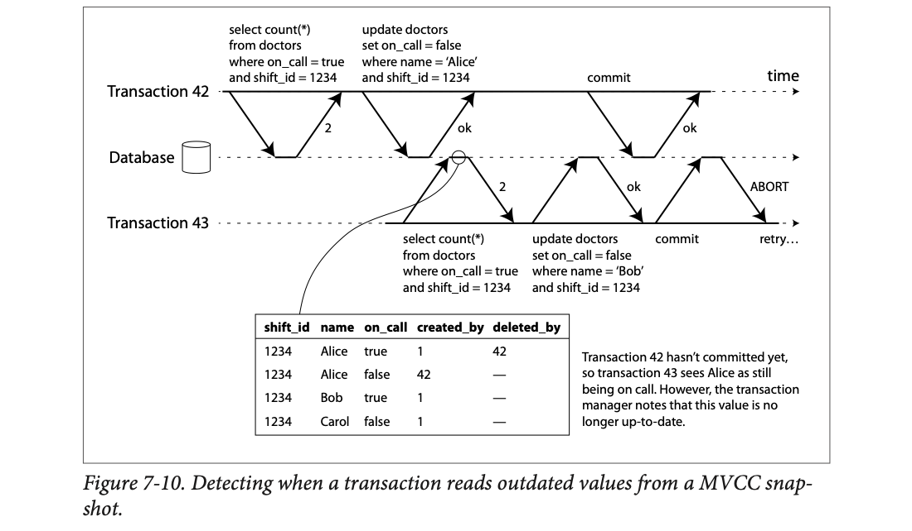
Txn 42 (top) counts on-call doctors (2) and sets Alice off call. Then txn 43 (bottom) runs the same count. The little circle on the database line marks 43's read; the table below shows the row versions at that moment: Alice true, deleted_by 42 and Alice false, created_by 42. Since 42 hasn't committed, 43 sees Alice = true and counts 2. The note on the right: the transaction manager notes that this value is no longer up to date. 42 commits (ok). 43 updates Bob (ok), tries to commit, gets ABORT, and must retry.
You check the hostel room chart at 9:00 and see "Room 4 free"; the warden's pencil note "Ravi moving in" is not yet in ink, so you ignore it. At 9:05 you try to finalise your move and the warden says: "that pencil note became ink at 9:02; your check is stale, please check again". Where it breaks: the warden would only bother you if you're actually moving (writing); just looking (read-only) is fine, which is exactly SSI's "wait until commit" rule.
MVCC already knows, per read, which versions were skipped and whose they were. SSI just remembers "43 skipped a write by 42". At 43's commit: did 42 commit? Did 43 write anything? If both, abort 43.
Transaction 43 reads the doctors on call while transaction 42 has an uncommitted change to Alice's row.
| Moment | What the database records or checks | Outcome |
|---|---|---|
| 43 reads | "43 ignored 42's write to Alice (42 not yet committed)" | 43 sees count = 2 |
| 42 commits | — | Alice is now off call |
| 43 tries to commit (it wrote Bob's row) | was any ignored write committed? yes, 42's | 43 aborted, retried |
| If 43 had only read and never written | same check, but no writes to protect | 43 commits fine |
That last row is why SSI waits until commit to decide: a read-only transaction never needs to be aborted for this.
The second case: another transaction modifies data after it has been read (Figure 7-11).
Under 2PL we had index-range locks that lock all rows matching a query like WHERE shift_id = 1234. SSI uses a similar technique, except its locks don't block other transactions.
In Figure 7-11, transactions 42 and 43 both search for on-call doctors in shift 1234. If there's an index on shift_id, the database uses index entry 1234 to record that 42 and 43 read this data. (No index? Track it at the table level.) This only needs to be kept for a while: once a transaction has finished (committed or aborted) and all concurrent transactions have finished, the database can forget what it read.
When a transaction writes, it must look in the indexes for any other transactions that recently read the affected data. This is like acquiring a write lock on the key range, but instead of blocking until the readers commit, the lock acts as a tripwire: it just notifies those transactions that what they read may be out of date.
In Figure 7-11, 43 notifies 42 that its prior read is outdated, and vice versa. 42 commits first and succeeds: although 43's write affected 42, 43 hasn't committed, so that write hasn't taken effect. But when 43 wants to commit, the conflicting write from 42 has already committed, so 43 must abort.
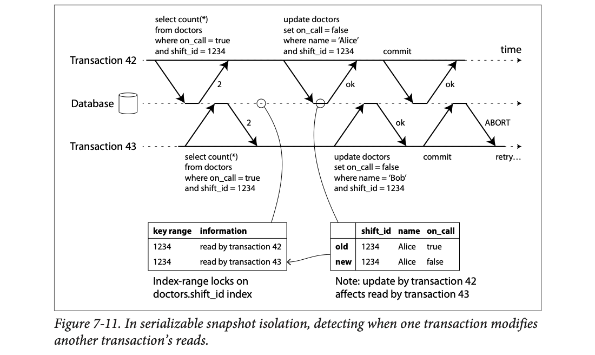
Both transactions run select count(*) and get 2. The left table ("Index-range locks on doctors.shift_id index") records: key 1234 read by transaction 42; key 1234 read by transaction 43. When 42 updates Alice (right table: old row true, new row false), the database looks up key 1234 and finds 43 has read it: "update by transaction 42 affects read by transaction 43" (the arrow). 43's update of Bob likewise trips 42. 42 commits first: ok. 43 commits: ABORT, retry.
A shared office fridge with a sign-in sheet: "Priya looked at the milk at 10:00; Arjun looked at the milk at 10:01". When Priya takes the last milk, she doesn't wait for anyone; she just puts a sticky note on Arjun's desk: "the milk you saw is gone". If Arjun then tries to finalise a plan that depended on that milk, he must re-plan. Where it breaks: in the office, Arjun might ignore the note; the database enforces it at commit.
Reads leave SIREAD-style markers on index ranges (PostgreSQL's term for these non-blocking read locks, beyond the book). Writes check the markers and record "rw-dependencies" between transactions. At commit, a transaction whose premise was overwritten by an already-committed transaction is aborted.
As always, engineering details decide how well it works in practice:
Compared with two-phase locking: the big advantage is that one transaction doesn't block waiting for another's locks. As in snapshot isolation, writers don't block readers and vice versa. Query latency is much more predictable. In particular, read-only queries run on a consistent snapshot without any locks, which is very appealing for read-heavy workloads.
Compared with serial execution: SSI isn't limited to one CPU core. FoundationDB distributes serialization-conflict detection across multiple machines, reaching very high throughput. Even with data partitioned across machines, transactions can read and write multiple partitions while staying serializable.
The abort rate significantly affects overall performance. A transaction that reads and writes over a long period is likely to conflict and abort, so SSI requires read-write transactions to be fairly short (long-running read-only ones may be fine, depending on the implementation). Still, SSI is probably less sensitive to slow transactions than 2PL or serial execution.
| Serial execution | 2PL | SSI | |
|---|---|---|---|
| Readers block writers? | everything waits its turn | yes | no |
| Uses many cores/machines? | only via clean partitions | yes | yes (FoundationDB distributes detection) |
| Effect of one slow txn | stalls everything | stalls everyone waiting for its locks | mostly hurts itself (more likely to abort) |
| Wasted work | none | deadlock aborts | conflict aborts |
Values here are modelled to make the idea concrete, not from the book.
Back to the exam hall: checking every answer line-by-line for copying (fine-grained) is accurate but slow for the invigilator; checking "did two students sit next to each other?" (coarse) is fast but cancels some honest papers. Where it breaks: exams happen once; databases do this millions of times a second, so the overhead choice really matters.
Since nobody waits, latency is roughly "snapshot isolation latency + small bookkeeping". The cost moves to the abort rate, which grows with transaction length and contention.
T1 reads doctors in shift 1234. T2 updates a doctor in shift 5678. They don't really conflict.
| Tracking granularity | Bookkeeping cost | Result |
|---|---|---|
| Per index entry (shift_id value) | more memory and CPU | no conflict, both commit |
| Per table (no index) | very cheap | looks like a conflict, one is aborted for nothing |
Precise tracking means fewer needless aborts but more overhead. Each database picks a point on this scale.
Numbers here are modelled to make the idea concrete, not from the book.
Many clerks book seats on the same train chart. Dirty read: you see a seat marked by a clerk who then cancels. Dirty write: two clerks scribble over each other's half-finished booking. Read skew: you count free seats in coach S1 before a transfer and in S2 after it, and seats seem to vanish. Lost update: two clerks both read "10 free", both book one, both write "9". Write skew: two clerks each check "at least one TTE on duty", each sends a different TTE home. Phantom: you check "berth 23 is free", someone else inserts a booking for it. Serializable means the chart looks as if the clerks took turns. Where it breaks: clerks can talk to each other; database transactions only know what the isolation level makes them see.
Transactions are an abstraction layer that lets an app pretend certain concurrency problems and certain hardware/software faults don't exist. A large class of errors becomes a simple transaction abort, and the app just tries again.
Not every app is exposed to every problem: an app that only reads and writes a single record can probably manage without transactions. For more complex access patterns, transactions hugely reduce the number of error cases you must think about.
Many NoSQL systems dropped transactions for scalability, availability and performance. Apps on them must either build their own transaction management (unlikely, as it's hard to get right) or accept approximate data. Without transactions, crashes, network interruptions, power outages, full disks and unexpected concurrency can make data inconsistent in various ways (e.g. denormalized data drifting from its source), and reasoning about complex interacting accesses becomes very hard.
The chapter went deep on concurrency control: read committed, snapshot isolation (sometimes called repeatable read) and serializable, characterised by these races:
| Race | What happens | What stops it |
|---|---|---|
| Dirty reads | A client reads another client's writes before they're committed. | Read committed and stronger. |
| Dirty writes | A client overwrites data another client wrote but hasn't committed. | Almost all transaction implementations. |
| Read skew (non-repeatable read) | A client sees different parts of the database at different points in time. | Snapshot isolation, usually via MVCC. |
| Lost updates | Two clients do read-modify-write concurrently; one overwrites the other without including its change. | Some snapshot isolation implementations detect it; otherwise atomic ops / explicit locks. |
| Write skew | A transaction reads, decides, writes; by the time it writes, the premise is false. | Only serializable isolation. |
| Phantom reads | A transaction reads rows matching a condition; another client's write changes that result. | Snapshot isolation stops simple phantom reads; in write skew they need e.g. index-range locks. |
Weak levels protect against some of these and leave others to you (e.g. explicit locking). Only serializable isolation protects against all of them. Three ways to implement it:
The examples used a relational model, but transactions are valuable whatever the data model. Most ideas apply whether the database is on one machine or replicated and partitioned; distributed transactions bring extra challenges, covered in the next two chapters.
| Term | Meaning | Plate |
|---|---|---|
| Transaction | Group of reads/writes executed as one unit: commit all or abort all. | 01 |
| Commit / abort (rollback) | Make all writes permanent and visible / discard all writes. | 01 |
| ACID | Atomicity, Consistency, Isolation, Durability (Härder & Reuter, 1983). | 03 |
| BASE | Basically Available, Soft state, Eventual consistency: roughly "not ACID". | 03 |
| Atomicity | Abortability: on fault, undo all the transaction's writes. | 04 |
| Invariant | A statement about your data that must always be true. | 05 |
| Serializability | Result equals some one-at-a-time order of the transactions. | 06, 32 |
| Durability | Committed data survives crashes (disk, replication, backups). | 07 |
| Multi-object transaction | Transaction touching several rows/documents/index entries. | 08 |
| Compare-and-set (CAS) | Write only if the value still equals what you read. | 09, 25 |
| Read committed | No dirty reads, no dirty writes. | 13 |
| Read uncommitted | No dirty writes, but dirty reads allowed. | 13 |
| Snapshot isolation | Each transaction reads a consistent snapshot from its start. | 16 |
| MVCC | Multi-version concurrency control: keep several committed versions, tagged with txids. | 17 |
| Visibility rules | Which versions a transaction may see, based on txids at its start. | 18 |
| Append-only / copy-on-write B-tree | Writes copy pages up to a new root; each root is a snapshot. | 19 |
| Repeatable read | SQL-standard name; means different things in different DBs. | 20 |
| Read-modify-write cycle | Read a value, change it in app code, write it back. | 21 |
| Cursor stability | Atomic update via exclusive lock on read. | 22 |
| SELECT … FOR UPDATE | Lock the rows a query returns until commit. | 23 |
| Siblings / LWW | Conflicting versions kept for merging / last write wins (loses updates). | 26 |
| Phantom | A write that changes another transaction's search result. | 30 |
| Materializing conflicts | Create lock rows so phantoms become row-lock conflicts. | 31 |
| Stored procedure | Whole transaction code submitted to and run inside the DB. | 34 |
| Two-phase locking (2PL, SS2PL) | Shared/exclusive locks held until commit; readers and writers block each other. | 38 |
| Deadlock | Transactions waiting on each other's locks in a cycle; DB aborts one. | 39 |
| Predicate lock | Lock on all objects matching a condition, incl. future ones. | 41 |
| Index-range (next-key) lock | Cheaper, broader approximation of a predicate lock on an index. | 42 |
| Pessimistic / optimistic CC | Wait until safe / proceed, check at commit, abort if needed. | 44 |
| SSI | Snapshot isolation + detection of outdated premises at commit. | 43–48 |
| Anti-caching | Abort, load missing data into RAM, restart. | 37 |
| System | What the chapter says about it |
|---|---|
| IBM System R | First SQL database (1975); its transaction style is still copied today. |
| PostgreSQL | Default read committed; "repeatable read" = snapshot isolation with lost-update detection; MVCC with created_by/deleted_by and vacuum; 32-bit txids; range types; "serializable" = SSI since 9.1; avoids index updates when versions share a page. |
| MySQL / InnoDB | Snapshot isolation called "repeatable read", but no lost-update detection; serializable uses 2PL. |
| Oracle (11g) | Default read committed; "serializable" is really snapshot isolation (detects lost updates, not write skew); PL/SQL procedures. |
| SQL Server | Default read committed (2012); snapshot isolation level detects lost updates; serializable uses 2PL; read-committed uses locks if read_committed_snapshot=off; T-SQL. |
| IBM DB2 | Uses locks for read committed; "repeatable read" means serializability, implemented with 2PL. |
| MemSQL | Read committed by default. |
| MongoDB | Atomic operations on parts of a JSON document. |
| Redis | Atomic data-structure operations; serial single-threaded execution; Lua stored procedures. |
| Riak 2.0 | Datatypes that merge concurrent updates commutatively, so no lost updates across replicas. |
| CouchDB, Datomic, LMDB | Append-only / copy-on-write B-trees; each root is a snapshot. |
| VoltDB / H-Store | Serial execution; stored procedures in Java/Groovy; deterministic procedures replicated by re-execution; partitioned, ~1,000 cross-partition writes/s. |
| Datomic | Serial execution; procedures in Java or Clojure. |
| FoundationDB | SSI-like algorithm with conflict detection distributed across machines; multi-partition serializable transactions. |
| Cassandra, Aerospike | Single-object CAS-style operations marketed as "lightweight transactions" / "ACID" (refs [19]–[21]). |
| Rails ActiveRecord, Django | ORMs that don't retry aborted transactions and make unsafe read-modify-write easy. |
| Google Spanner | The opening quote: better to have transactions and handle their cost than to code around their absence. |
Things have moved since 2017: MongoDB added multi-document transactions (4.0+), MySQL 8 is still repeatable-read without lost-update detection by default, CockroachDB uses serializable by default, and Spanner offers external consistency. Check current docs before relying on any one of these.
Because ACID atomicity isn't about concurrency; it's about being able to abort a transaction on a fault and have all its writes discarded, so it can be safely retried.
Consistency (invariants holding) depends on the application's rules and its transactions. The database can only check some constraints (unique, foreign key). A, I and D are database properties; C is an application property.
43. The second write happens after the first transaction committed, so it isn't a dirty write; read committed allows it. You need an atomic increment, a lock, lost-update detection, or serializability.
Bob's update to the listing would wait for Alice's row lock until she commits. Then Bob's writes land after Alice's on both rows, so listing and invoice both end up naming Bob (or both Alice, depending on order), never a mix.
One long-running write transaction would force many readers to wait, hurting response times and spreading slowdowns across unrelated parts of the app. Instead they keep the old committed value and give it to readers.
Txn 12 reads 500: rule 3 (writes by transactions with a later txid are ignored, even if committed) hides both 13's deletion of the 500 row and its creation of the 400 row. Txn 14 also reads 500: rule 1 (transactions in progress when the reader started are ignored, even if they later commit).
No. MySQL/InnoDB's repeatable read doesn't detect lost updates. Use an atomic UPDATE, SELECT … FOR UPDATE, or serializable.
The check looks for the absence of overlapping bookings. If it returns no rows, there's nothing to lock, and the other transaction's INSERT creates a phantom. You need serializable isolation (predicate / index-range locks or SSI) or materialized conflict rows.
With one thread, any time spent waiting for the app's next statement over the network is idle time for the whole database. Sending the entire transaction up front lets it run from memory without network waits.
2PL: B waits until A commits or aborts (reader blocks writer). Snapshot isolation: B proceeds; A keeps reading its old version (readers never block writers).
At read time the database doesn't know if 43 will write. If 43 is read-only, there's no write-skew risk and no need to abort. So it waits until commit and checks then.
The abort rate climbs: long read-write transactions are likely to have their premises overwritten. Retries add load, and near max throughput that makes things worse. SSI needs read-write transactions to be short.